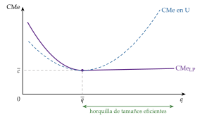
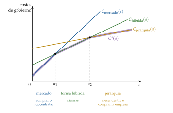
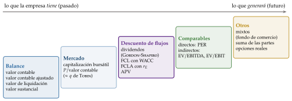
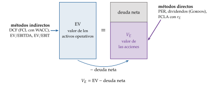
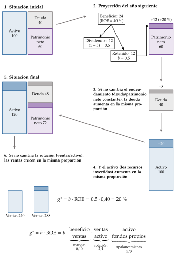
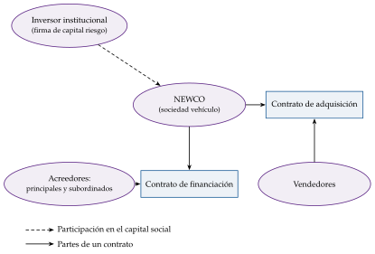
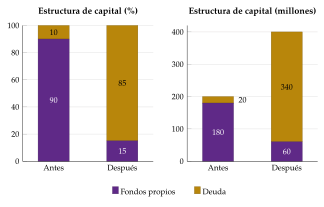
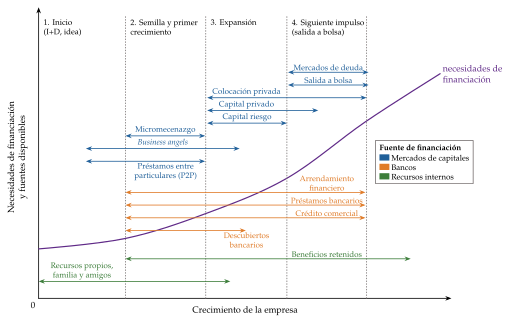
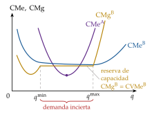

Tema 3.B.4
Análisis del crecimiento de la empresa. Métodos de valoración de empresas. Especial referencia a los procesos de fusión, adquisición y alianzas estratégicas.
Por qué crecen las empresas (Coase, Williamson, Penrose, Gibrat), cómo se valoran (DCF, WACC, Gordon-Shapiro, múltiplos) y fusiones, adquisiciones y alianzas.
Exclusivo Material exclusivo de victorgutierrezmarcos.es y la app Oposición TCEE · DCE. Puedes usarlo libremente para tu estudio personal. No se autoriza su incorporación a otras plataformas, aplicaciones o servicios. Condiciones de uso.
Introducción
Enganche:
«Roma no se hizo en un día», dice el refrán. Una empresa puede crecer como Roma, piedra a piedra, invirtiendo en su propia capacidad; o puede intentar comprar la ciudad ya construida.
En mayo de 2024, BBVA anunció una oferta pública de adquisición (OPA) sobre Banco Sabadell sin el acuerdo de su consejo. Durante 17 meses se discutió cuánto valía Sabadell, si el canje de acciones ofrecido era suficiente, qué condiciones pondrían la autoridad de competencia y el Gobierno y qué harían los accionistas. Al final, la oferta la aceptaron acciones que representaban el 25,33 % del capital, lejos del mínimo del 50 % al que BBVA la había condicionado, y quedó sin efecto.
Detrás está la pregunta de esta exposición: ¿por qué crecen las empresas, cuánto vale lo que compran y cuándo conviene crecer comprando, fusionándose o aliándose en lugar de construir?
Relevancia:
El tamaño de las empresas no es un asunto solo de sus dueños: de él dependen la productividad (las economías de escala y la capacidad de innovar y de exportar), los salarios (las grandes pagan más), el empleo, la resistencia a las crisis y la competencia.
España es un país de empresas pequeñas: de los 3,31 millones de empresas activas a 1 de enero de 2025, el 54,4 % no tenía asalariados y solo el 2,3 % tenía 20 o más. Y el tamaño importa: en 2024, el valor añadido por ocupado de las grandes empresas era 1,7 veces el de las microempresas [ver tema 3.A.15].
Crecer comprando es, además, un mercado enorme: en 2025, las fusiones y adquisiciones anunciadas en el mundo sumaron 4,6 billones de dólares, un 49 % más que el año anterior, con 68 operaciones de más de 10.000 millones.
Contextualización:
Para la teoría microeconómica, la empresa es la unidad que combina factores para producir bienes y maximiza su beneficio; la teoría de la empresa se pregunta además por qué existe y dónde acaban sus fronteras [ver tema 3.A.15].
Para las finanzas corporativas, la empresa es un conjunto de decisiones de inversión que exigen sus correspondientes decisiones de financiación, guiadas por un objetivo. Para Friedman (1970),1 la responsabilidad social de la empresa es aumentar sus beneficios; las finanzas lo traducen en maximizar el valor de la empresa para sus accionistas, el valor actual de los flujos que les generará.2
Ese objetivo se concreta en 3 decisiones: de inversión [ver tema 3.B.2], de financiación [ver tema 3.B.3] y de dimensión. Esta exposición trata la tercera: cuánto y cómo crece la empresa. Y para decidirlo hay que saber cuánto vale lo que se crea o se compra.
Las empresas nacen, crecen, se fusionan, se dividen, se alían y desaparecen. Ejemplos recientes: la compra de Opel por PSA (2017) y la fusión de PSA con Fiat Chrysler en Stellantis (2021), la absorción de Bankia por CaixaBank (2021), la expansión exterior de las grandes empresas españolas y la propia OPA fallida de BBVA sobre Sabadell.
Definiciones: el crecimiento de la empresa es el aumento de su dimensión (ventas, activos, empleo o valor) a lo largo del tiempo. Es interno u orgánico si la empresa invierte en su propia capacidad, y externo o inorgánico si adquiere capacidad ya instalada de otra empresa, por fusión o adquisición. Entre los 2 están las alianzas estratégicas: acuerdos de colaboración en los que las empresas mantienen su personalidad jurídica.
Problemática:
¿Por qué crecen las empresas? ¿Hay un tamaño óptimo hacia el que tienden?
¿Cuánto vale una empresa, y por qué distintos métodos dan valores distintos?
¿Cuándo conviene crecer dentro, comprar otra empresa o fusionarse con ella, o aliarse con ella? ¿Crean valor las fusiones y adquisiciones, y para quién?
Estructura:
Con un enfoque que une la organización industrial, las finanzas corporativas y la economía financiera, la exposición sigue el orden de la pregunta:
un análisis teórico (bloque I): por qué crecen las empresas, en 2 grupos de teorías, las que ven un tamaño óptimo y las que no;
un análisis financiero (bloque II): cómo se valora una empresa, del valor contable al de mercado y al valor intrínseco, y cómo se financia su crecimiento;
un análisis estratégico (bloque III): las vías para crecer, la interna y la externa (fusiones y adquisiciones), y entre ambas las alianzas estratégicas, que son la especial referencia del título.
El orden no es casual: las teorías dicen por qué crecer; la valoración, cuánto vale lo que se crea o se compra; y con las 2 cosas se elige cómo crecer.
3.B.4. Análisis del crecimiento de la empresa. Métodos de valoración de empresas. Especial referencia a los procesos de fusión, adquisición y alianzas estratégicas
Introducción2′30″
I. Teorías explicativas del crecimiento de la empresa6′30″
1. Teorías que consideran que la empresa crece hasta el tamaño óptimo: el enfoque tecnológico y Stigler; el enfoque transaccional
2. Teorías que defienden la inexistencia de un tamaño óptimo: Penrose, Gibrat y Marris
II. Análisis financiero del crecimiento empresarial9′30″
1. Métodos de valoración de empresas: del valor contable al de mercado; descuento de dividendos y de flujos de caja; múltiplos; otros métodos; ¿qué método utilizar?
2. Financiación del crecimiento empresarial
III. Estrategias de crecimiento empresarial10′30″
1. Crecimiento interno u orgánico
2. Crecimiento externo o inorgánico: fusiones y adquisiciones, desconcentración y alianzas estratégicas
Conclusión1′
Reparto del cante: introducción, 2′30″; I, 6′30″ (I.1, 3′30″: enfoque tecnológico y Stigler, 1′, y enfoque transaccional, 2′30″; I.2, 3′: Penrose, Gibrat y Marris, 1′ cada uno); II, 9′30″ (II.1, 8′: la escalera de métodos, 1′; Gordon y Shapiro, 1′30″; descuento de flujos de caja, 3′; múltiplos, 1′30″; otros métodos y qué método, 1′; II.2, 1′30″); III, 10′30″ (apertura con la matriz de Ansoff, 0′30″; III.1, 2′; III.2, 8′), y conclusión, 1′. La especial referencia del título es el bloque III, que lleva más tiempo que los otros 2. Los gráficos y figuras imprescindibles son el de gobierno con los modos de crecimiento (gráfico 2), que se presenta en el bloque I y vuelve hasta las alianzas; la escalera de métodos de valoración (figura 1) y el puente del valor de la empresa al de las acciones (figura 2) en el bloque II; y la matriz de Ansoff en el bloque III. Las funciones clave son el valor por descuento de flujos de caja (3), que se usa hasta el final, y el valor de una adquisición del bloque III. El refrán del enganche, «Roma no se hizo en un día», vuelve en la idea final; los dichos van junto a su concepto: «el precio es lo que pagas; el valor, lo que recibes» (Graham, citado por Buffett), al cerrar la valoración, y las 3 del bloque III. Las notas al pie, las cajas grises y los anexos son para las preguntas del tribunal.
Notación. En el bloque I, con la misma notación que la teoría de la empresa [ver tema 3.A.15], \(m\) es el número de transacciones que organiza la empresa, \(\mathrm{CMg}^{\mathrm{org}}\) y \(\mathrm{CMg}^{\mathrm{tr}}\) los costes marginales de organizar una transacción dentro y de hacerla en el mercado, \(a\) la especificidad de los activos, con umbrales \(a_1<a_2\), y \(C_{\text{mercado}}(a)\), \(C_{\text{híbrida}}(a)\) y \(C_{\text{jerarquía}}(a)\) los costes de gobierno; \(\overline q\) es la escala mínima eficiente y \(\overline c\) el coste medio mínimo; en la ley de Gibrat, \(S_{i,t}\) es el tamaño de la empresa \(i\) en \(t\) y \(\varepsilon_{i,t}\) una perturbación (locales). En el bloque II, \(P_0\) es el precio de la acción hoy, \(D_t\) el dividendo, \(\mathrm{BPA}_t\) el beneficio por acción, \(b\) la tasa de retención del beneficio, \(\mathrm{ROE}\) la rentabilidad financiera, \(g\) la tasa de crecimiento y \(r_E\) y \(r_D\) las rentabilidades que exigen los accionistas y los acreedores; \(V_E\) y \(V_D\) son los valores de las acciones y de la deuda, \(V=V_E+V_D\) y \(L=V_D/V\); \(t_{IS}\) es el tipo del impuesto sobre sociedades. \(\mathrm{FCL}_t\) es el flujo de caja libre, \(\mathrm{FCLA}_t\) el flujo de caja libre para el accionista, \(\mathrm{WACC}\) el coste medio ponderado del capital, \(N\) el horizonte de la proyección y \(\mathrm{VT}_N\) el valor terminal. \(\mathrm{EV}\) es el valor de la empresa (enterprise value): el de sus activos operativos, del que se resta la deuda neta (la deuda financiera menos la caja) para llegar a \(V_E\); en el \(\mathrm{WACC}\), en cambio, \(V\) suma la deuda sin restar la caja. En el bloque III, \(g^{*}\) es la tasa de crecimiento sostenible; \(V_A\), \(V_B\) y \(V_{AB}\) son los valores de la adquirente, la adquirida y el conjunto, \(P_B\) el precio total pagado por \(B\) y \(\Delta V\) las sinergias; en la ecuación de canje, \(n_A\) y \(n_B\) son los números de acciones, \(V_{E,A}/n_A\) y \(V_{E,B}/n_B\) los valores por acción, \(\theta\) la prima y \(\mathrm{TC}\) el tipo de canje (locales).
Para ver en 5 minutos, a velocidad rápida, ejemplos de crecimiento interno y externo: Crecimiento interno u orgánico vs crecimiento externo o inorgánico (vídeo), https://youtu.
I. Teorías explicativas del crecimiento de la empresa
En el cante (6′30″): el hilo es un árbol de 2 ramas, «tamaño óptimo: sí / no», con los autores de cada rama. I.1, 3′30″: el enfoque tecnológico y la L de Stigler, de palabra o con el gráfico 1 pequeño si sobra tiempo (1′); Coase y la frontera en el margen, de palabra con su ecuación (0′30″); Williamson: la especificidad, las 3 estructuras de gobierno y, por capas, el gráfico 2 con los modos de crecimiento debajo (1′30″); los contratos incompletos, de palabra (0′30″). El gráfico de gobierno vuelve en la apertura del bloque III y en las alianzas. I.2, 3′: Penrose y su efecto, de palabra (1′); Gibrat con la (1) en una línea y la lognormal, la evidencia en una frase (1′); Marris con su restricción de seguridad y la agencia de Jensen (1′). Las notas al pie (la red de contratos, el gráfico de Stigler, los premios Nobel) son de profundización.
Conclusión anticipada: no hay una teoría del crecimiento de la empresa, sino 2 familias. Unas ven un tamaño óptimo (por la tecnología o por los costes de usar el mercado) hacia el que la empresa crece; otras niegan que exista o que se alcance, y explican el crecimiento por los recursos internos, el azar o los objetivos de los directivos.
Nexo: crecimiento y dimensión van juntos: crecer es cambiar de dimensión, y por eso estudiamos las 2 cosas a la vez. Empezamos por la pregunta más antigua: ¿hasta dónde conviene crecer?
I.1. Teorías que consideran que la empresa crece hasta el tamaño óptimo
Las 2 teorías de este grupo dan a la empresa un destino: un tamaño o una horquilla de tamaños. La primera lo deriva de la tecnología; la segunda, de lo que cuesta usar el mercado.
I.1.1. El enfoque tecnológico (teoría neoclásica) y la crítica de Stigler
a) Idea
Para la teoría neoclásica, la dimensión eficiente de la empresa la fija la tecnología: hay un tamaño con el que se produce al menor coste medio posible, y la empresa crece hasta él.
b) Modelo
i) Supuestos
A largo plazo todos los factores son variables, y la tecnología tiene rendimientos a escala primero crecientes (indivisibilidades, especialización) y después decrecientes (dificultades de dirección y coordinación) [ver tema 3.A.12].
ii) Desarrollo
Con esos rendimientos, el coste medio a largo plazo tiene forma de U: economías de escala mientras decrece y deseconomías cuando crece.
La escala mínima eficiente, \(\overline{q}\), es el menor nivel de producción con el que se alcanza el coste medio mínimo \(\overline{c}\): allí se agotan las economías de escala [ver tema 3.A.15].
iii) Implicaciones
La empresa crece hasta \(\overline{q}\): el tamaño lo dicta la tecnología y la estructura de costes. Producir allí da eficiencia productiva, la de producir al menor coste posible; la eficiencia asignativa exige además que el precio iguale al coste marginal, lo que depende de la competencia, no del tamaño.
El número de empresas que caben en un mercado es, aproximadamente, la demanda a ese coste dividida entre \(\overline{q}\) [ver tema 3.A.16].
c) Extensiones: la flexibilidad de Stigler (1939)
Stigler (1939)3 añade la incertidumbre de la demanda. Si la demanda fluctúa, a la empresa le conviene una planta flexible: con un coste medio mínimo algo mayor, pero casi constante en un intervalo amplio de producción, en lugar de una planta muy barata solo en un punto.4
Resultado: no hay un tamaño óptimo, sino una horquilla de tamaños con costes casi iguales; la empresa elige su capacidad pensando en la demanda que espera.
d) Evidencia empírica
Los estudios estadísticos y de ingeniería encuentran a menudo costes medios a largo plazo en forma de L, decrecientes hasta \(\overline{q}\) y casi constantes después (gráfico 1). Con la técnica del superviviente (son eficientes los tamaños que ganan cuota con el tiempo), Stigler (1958) encuentra en muchas industrias una horquilla amplia de tamaños eficientes [ver tema 3.A.15].

e) Valoración
El enfoque explica el tamaño de la planta, no el de la empresa: una empresa puede tener muchas plantas y reunir actividades sin economías técnicas entre ellas.
Tampoco dice por qué las economías de escala se aprovechan dentro de una empresa y no con contratos entre empresas independientes. Es la pregunta del enfoque transaccional.
I.1.2. El enfoque transaccional o contractualista (Coase, Williamson, Grossman y Hart)
a) Idea
Si el mercado asigna bien los recursos, ¿por qué hay empresas? Coase (1937) responde que usar el mecanismo de precios cuesta: la empresa sustituye contratos por autoridad, y su tamaño depende de lo que cueste cada cosa. Es el dilema de hacer o comprar (make or buy), que es también el de crecer o no crecer.5
«The main reason why it is profitable to establish a firm would seem to be that there is a cost of using the price mechanism» («la principal razón por la que es rentable crear una empresa parece ser que usar el mecanismo de precios tiene un coste»).
b) Modelo
i) Supuestos
Usar el mercado tiene costes de transacción,6 que la teoría anterior, atenta solo a los costes de producción, había pasado por alto:
ex ante: buscar proveedores fiables, conocer los precios, negociar y redactar los contratos;
ex post: vigilar su cumplimiento, coordinar, adaptarlos a lo que no se previó y resolver los conflictos.7
Organizar dentro también cuesta, y cada vez más al crecer: la dirección tiene rendimientos decrecientes.
Los agentes tienen racionalidad limitada (los contratos no pueden preverlo todo) y pueden ser oportunistas.
ii) Desarrollo
La frontera de la empresa: la empresa crece mientras organizar una transacción más dentro le cueste menos que hacerla en el mercado. La condición es en el margen, no en totales: si \(m\) es el número de transacciones que organiza, su tamaño \(m^{*}\) cumple \(\mathrm{CMg}^{\mathrm{org}}(m^{*})=\mathrm{CMg}^{\mathrm{tr}}(m^{*})\) [ver tema 3.A.15].
Qué hace cara una transacción: Williamson (1979) distingue 3 atributos:
la especificidad de los activos, \(a\), el más importante: cuánto valor pierde un activo fuera de la relación para la que se invirtió. Crea una cuasirrenta que la otra parte puede intentar apropiarse amenazando con romper (la expropiación de la cuasirrenta, hold-up): lo que antes de invertir era un mercado con muchos oferentes se convierte en un monopolio bilateral [ver tema 3.A.17];
la incertidumbre, que deja más huecos en el contrato;
la frecuencia, que no encarece la transacción, pero justifica el coste fijo de una estructura de gobierno especializada.
Estructuras de gobierno: Williamson (1991) compara el mercado, las formas híbridas (contratos a largo plazo, franquicias, alianzas) y la jerarquía (la empresa). Sus costes de gobierno crecen con \(a\) a ritmos distintos: el mercado es el más barato con poca especificidad y el que más se encarece con ella; la jerarquía, al revés. La estructura eficiente minimiza el coste de gobierno según la especificidad (gráfico 2): \[C^{*}(a)=\min\big\{C_{\text{mercado}}(a),\;C_{\text{híbrida}}(a),\;C_{\text{jerarquía}}(a)\big\}.\]

iii) Implicaciones: los modos de crecimiento
Cada estructura de gobierno es un modo de crecimiento:
con poca especificidad (\(a<a_1\)), el mercado: la empresa compra o subcontrata, y no necesita crecer;
con especificidad intermedia (\(a_1<a<a_2\)), las formas híbridas: contratos a largo plazo y alianzas estratégicas (III.2.3);
con mucha especificidad (\(a>a_2\)), la jerarquía: crecer dentro o comprar al proveedor o al cliente (integración vertical, III.2.1).
La integración vertical deja de ser un indicio de monopolización: puede ser la forma más barata de proteger una inversión específica.
c) Extensiones: los contratos incompletos (Grossman, Hart y Moore)
¿Qué cambia al integrar, si la división comprada puede seguir siendo oportunista? Cambia quién es dueño de los activos. Con contratos incompletos, la propiedad da los derechos residuales de control: decidir sobre los activos en todo lo que el contrato no prevé.
Comprar al otro da incentivos a invertir al comprador y se los quita al vendido, que pasa a ser empleado. Por eso la propiedad debe ir a quien más aporta con su inversión específica, y la empresa no crece hasta hacerse con todos los activos [ver tema 3.A.15].
Explica bien por qué muchas empresas grandes compran pequeñas con la tecnología o el equipo que les faltan: compran los activos clave, no toda la cadena.
d) Valoración
El enfoque explica qué se integra (lo que tiene activos específicos), por qué hay alianzas (las formas híbridas) y por qué una fusión vertical puede ser eficiente aunque reduzca el número de empresas. Pero, como el tecnológico, da a cada empresa una frontera de equilibrio: no explica por qué las empresas siguen creciendo una vez alcanzada.
I.2. Teorías que defienden la inexistencia de un tamaño óptimo
Las teorías anteriores dan a la empresa un destino. Las de este grupo explican por qué las empresas siguen creciendo, a ritmos muy distintos, sin converger a ningún tamaño: o el óptimo no existe, o no se alcanza, o no limita el crecimiento.
I.2.1. La teoría del crecimiento de Penrose (1959)
a) Idea
En The Theory of the Growth of the Firm, Penrose (1959) cambia la pregunta del tamaño al crecimiento: la empresa crece porque siempre tiene recursos sin usar, y el crecimiento se alimenta a sí mismo.
b) Modelo
i) Supuestos
La empresa es un conjunto de recursos productivos (materiales y humanos) coordinados por una organización, y el crecimiento nace dentro de ella.
ii) Desarrollo
Los recursos de la empresa casi nunca están en equilibrio, por 3 razones:
la indivisibilidad: una máquina o un equipo de ingenieros se compran enteros y quedan en parte ociosos, porque es imposible combinarlos en la proporción justa;
el uso múltiple: el mismo recurso puede usarse de formas distintas, unas más productivas que otras;
el aprendizaje: al trabajar, directivos y empleados aprenden y liberan continuamente servicios productivos nuevos que quedan sin usar.
Esos recursos ociosos empujan a crecer, y al crecer aparecen otros nuevos: una máquina que sobra lleva a ampliar, y la ampliación deja otros recursos infrautilizados.
El límite está en la dirección: los directivos que ya están tienen que formar e integrar a los nuevos, y eso lleva tiempo. Es el efecto Penrose: la capacidad de dirección limita la velocidad a la que una empresa puede crecer de forma rentable, aunque no fija un tamaño máximo [ver tema 3.A.15]. Los otros frenos son el mercado y la financiación.
iii) Implicaciones
No hay un tamaño de equilibrio, sino una tasa máxima de crecimiento. Y la empresa crece sobre todo hacia productos y mercados próximos a lo que ya sabe hacer (diversificación relacionada), donde aprovecha sus recursos ociosos.
c) Extensiones
Es el origen de la teoría de los recursos y capacidades: para Wernerfelt (1984), no basta con tener recursos clave; la ventaja de la empresa está en su capacidad organizativa para combinarlos. Explica por qué muchas empresas grandes compran pequeñas con la tecnología o el equipo que les faltan, sobre todo en el sector tecnológico.
d) Valoración
Explica bien la dirección del crecimiento y su ritmo, pero es difícil de medir y deja sin explicar por qué empresas parecidas crecen a ritmos tan distintos.
I.2.2. La ley de Gibrat (1931) y sus críticas
a) Idea
La distribución del tamaño de las empresas es muy asimétrica: muchas pequeñas, unas cuantas medianas y pocas muy grandes. Gibrat (1931) la explica sin ningún óptimo, con un solo supuesto: el crecimiento es proporcional y aleatorio.
b) Modelo
i) Supuestos
Ley del efecto proporcional: la tasa de crecimiento de una empresa es independiente de su tamaño y de su historia. Una empresa pequeña y una grande tienen la misma probabilidad de crecer un 10 %.
ii) Desarrollo
Si cada periodo el tamaño cambia en una proporción aleatoria, \[\tag{1} S_{i,t}=(1+\varepsilon_{i,t})\,S_{i,t-1}\quad\Longrightarrow\quad \ln S_{i,t}\approx \ln S_{i,0}+\sum_{\tau=1}^{t}\varepsilon_{i,\tau},\] con \(S_{i,t}\) el tamaño de la empresa \(i\) en \(t\) (empleo, ventas o activos) y \(\varepsilon_{i,t}\) perturbaciones pequeñas e independientes, de modo que \(\ln(1+\varepsilon_{i,t})\approx\varepsilon_{i,t}\).
El logaritmo del tamaño sigue un paseo aleatorio y, por el teorema central del límite, es aproximadamente normal: el tamaño sigue una distribución lognormal, asimétrica a la derecha, como la observada. Lo que es normal es el logaritmo del tamaño, no las tasas de crecimiento.
iii) Implicaciones
No hay tamaño óptimo hacia el que converger: la varianza de \(\ln S_{i,t}\) crece con \(t\), de modo que los tamaños se dispersan.
El crecimiento no es intencional: la concentración puede ser fruto del azar acumulado.
c) Extensiones
La cola de las empresas más grandes no es lognormal, sino una ley de potencias: el número de empresas mayores que un tamaño \(s\) cae como \(s^{-\alpha}\); con \(\alpha\approx1\) es la ley de Zipf, que sigue el tamaño de las empresas en Estados Unidos. Basta añadir a Gibrat un tamaño mínimo (las empresas que se encogen demasiado salen y las sustituyen otras) para que el mismo proceso genere esa cola.
d) Evidencia empírica
La ley se cumple aproximadamente para las empresas grandes; entre las pequeñas y jóvenes, el crecimiento disminuye con el tamaño y la edad, y su varianza también [ver tema 3.A.15] [ver tema 4.A.8]. Aun así, los tamaños no convergen.
e) Valoración
Es una referencia nula útil: obliga a las demás teorías a explicar lo que el azar no explica. Pero falla donde más importa, en las empresas jóvenes, y deja sin explicar por qué crece cada una. 2 tesis lo completan:
Geroski (1999), tras repasar la evidencia, concluye que el tamaño se comporta casi como un paseo aleatorio, y lo atribuye a que el crecimiento depende de innovaciones y oportunidades que llegan de forma irregular y difícil de prever;
la tesis de Alexander: las empresas no solo crecen para aumentar el beneficio, sino para estabilizarlo, diversificando actividades y mercados; las grandes tienen beneficios más estables.
I.2.3. La teoría gerencial del crecimiento: Marris (1964)
a) Idea
Cuando la propiedad está separada del control, quien decide el tamaño es el directivo, y su sueldo, su prestigio y la seguridad de su puesto crecen con el tamaño de la empresa. La empresa crece más de lo que conviene al accionista.
b) Modelo
i) Supuestos
Los directivos de la gran sociedad anónima maximizan la tasa de crecimiento equilibrado de la empresa, la misma para la demanda (con diversificación y publicidad) y para el capital (con beneficios retenidos).
ii) Desarrollo
Crecer más deprisa exige retener más beneficios y diversificar hacia negocios menos rentables, lo que baja la cotización. El directivo está sujeto a una restricción de seguridad: que la ratio de valoración de la empresa (valor de mercado entre valor contable) no caiga tanto como para que otra empresa la compre y despida a la dirección [ver tema 3.A.15].
iii) Implicaciones
La empresa elige el crecimiento máximo compatible con evitar la absorción, mayor que el que maximiza el valor para el accionista.
2 puentes con el resto del tema: la ratio de valoración se parece a la \(q\) media de Tobin8 (que divide por el coste de reposición del capital y no por su valor contable) [ver tema 3.A.34], que une el crecimiento con su valoración (bloque II); y el freno es la amenaza de compra, el mercado de control empresarial (III.2.1).
c) Extensiones: la agencia
Con información asimétrica, los accionistas no pueden impedirlo del todo: hay costes de agencia [ver tema 3.A.13].
Jensen (1986) lo aplica al crecimiento: una empresa madura con mucho flujo de caja libre (el que sobra tras financiar todos los proyectos con valor actual neto positivo) tiende a gastarlo en crecer, a menudo comprando otras empresas, en lugar de devolverlo a los accionistas. La deuda lo disciplina, porque obliga a pagar; es una de las razones de las adquisiciones apalancadas (III.2.1).
d) Valoración
Explica por qué crecen tanto las empresas con dirección profesional y mucha caja, y por qué tantas adquisiciones no crean valor para el comprador. El remedio está en el mercado: si la empresa vale menos de lo que podría, otro puede comprarla y sustituir a la dirección, el mercado de control empresarial. Las fusiones y adquisiciones son, a la vez, síntoma del problema y su remedio.
Recapitulación del bloque I:
la tecnología fija una escala mínima eficiente o, con la flexibilidad de Stigler, una horquilla de tamaños;
los costes de transacción y la propiedad de los activos explican de qué forma conviene crecer: con el mercado, con una alianza o con la jerarquía;
la dirección limita la velocidad de crecimiento (Penrose), el azar dispersa los tamaños (Gibrat) y los directivos empujan a crecer más de lo que conviene al accionista (Marris, Jensen).
Nexo: en todas, la empresa crece si crear o comprar capacidad vale más de lo que cuesta. Para saberlo hay que valorar la empresa: es el bloque siguiente.
II. Análisis financiero del crecimiento empresarial
En el cante (9′30″): la escalera de métodos (figura 1) es el esqueleto del apartado II.1, peldaño a peldaño (1′). Gordon y Shapiro: la (2) con \(g=b\cdot\mathrm{ROE}\), el PER adelantado y la condición \(\mathrm{ROE}\gtrless r_E\) (1′30″). Descuento de flujos de caja (3′): el \(\mathrm{FCL}\) de palabra, con la tabla 1 como apoyo; el \(\mathrm{WACC}\) en una línea; la (3), que vuelve en el bloque III; el puente \(\mathrm{EV}\to V_E\) con la figura 2 pequeño; el \(\mathrm{FCLA}\) y el APV, de palabra. Múltiplos directos e indirectos sobre el misma figura 2 (1′30″). Otros métodos, la tabla 2 de palabra y el dicho de Graham (1′). La financiación (II.2), de palabra, en 1′30″. La caja de Black y Scholes, las notas y la derivación de Gordon (anexo B) son de profundización.
Nexo: una vez visto por qué crecen las empresas, pasamos a analizar cuánto vale lo que crece.
Conclusión anticipada: no hay un valor de la empresa, sino tantos como preguntas. El valor contable mira al pasado; el de mercado solo es fiable si el mercado es eficiente; y el valor intrínseco descuenta los flujos que la empresa generará. Los métodos se complementan, y el precio que se paga en una operación es otra cosa: depende de las sinergias y de quién negocia mejor.
Valorar es imprescindible para crecer: para decidir una inversión, para fijar el precio máximo de una adquisición (y el mínimo de una venta) y para calcular la ecuación de canje de una fusión (III.2.1).
II.1. Métodos de valoración de empresas
Los métodos no son una lista, sino una escalera que va de lo que la empresa tiene a lo que generará (figura 1):
del balance: lo que la empresa tiene hoy, en libros o a precios de mercado;
del mercado: lo que la bolsa paga por sus acciones;
del descuento de flujos: lo que la empresa generará, descontado a su riesgo;
de los comparables: lo que el mercado paga por empresas parecidas;
y, en el último peldaño, los métodos mixtos, la suma de las partes y las opciones reales: lo que vale poder decidir más tarde.

Fuente: elaboración propia a partir de Fernández (2008).
II.1.1. Del valor contable al valor de mercado
Métodos de balance (estáticos): miden lo que la empresa tiene hoy.
El valor contable (o teórico): el patrimonio neto, activo menos pasivo exigible; por acción, el patrimonio neto entre el número de acciones.
El valor contable ajustado: el mismo, con cada activo y pasivo a su valor de mercado (inmuebles revalorizados, existencias a su valor real, contingencias).
El valor de liquidación: lo que quedaría al vender los activos y pagar las deudas y los costes del cierre; es el suelo del valor.
El valor sustancial: lo que costaría montar una empresa igual, con los activos necesarios para la explotación a precio de reposición.
Valoración de los métodos de balance: su ventaja es que todas las empresas tienen contabilidad; sus inconvenientes, que dependen de los criterios contables y no miran al futuro: ignoran la capacidad de generar beneficios, la marca, la clientela o el equipo humano. Por eso casi no se utilizan para valorar una empresa en funcionamiento.
El valor de mercado del capital (capitalización bursátil): el precio de la acción por el número de acciones. Es una primera aproximación, con 3 límites:
solo existe si la empresa cotiza;
solo es un buen estimador del valor intrínseco si el mercado es eficiente, al menos en sentido semifuerte, de modo que el precio recoja toda la información pública [ver tema 3.B.23]; si no, un análisis fundamental puede encontrar el valor «auténtico» del título;
es el valor de un paquete minoritario: no incluye la prima de control que hay que pagar para comprar la mayoría (III.2.1).
La distancia entre el valor de mercado y el contable es lo que el balance no recoge. Su cociente, la ratio precio/valor contable, se parece a la \(q\) de Tobin (valor de mercado entre coste de reposición del capital) [ver tema 3.A.34], y es la ratio de valoración de Marris (I.2.3).
II.1.2. El valor intrínseco: descuento de dividendos y de flujos de caja
Los métodos de descuento parten de una idea: el valor de un activo es el valor actual de lo que generará, descontado a una tasa que refleje su riesgo [ver tema 3.B.2]. Para el accionista, lo que genera la acción son dividendos; para la empresa entera, flujos de caja.
El descuento de dividendos: el modelo de Gordon y Shapiro
a) Idea
La acción da a su dueño 2 cosas: dividendos y el precio al que la venda. Si la mantiene \(N\) periodos y \(r_E\) es la rentabilidad que exigen los accionistas, \[P_0=\sum_{t=1}^{N}\frac{D_t}{(1+r_E)^t}+\frac{P_N}{(1+r_E)^N}.\]
No sabemos ni los dividendos futuros ni cuándo ni a qué precio se venderá. Pero \(P_N\) es, a su vez, el valor de los dividendos posteriores a \(N\): el precio de hoy es el valor actual de todos los dividendos futuros.
b) Modelo
Supuestos: el dividendo crece para siempre a una tasa constante \(g<r_E\), \(D_t=D_0(1+g)^t\), porque la empresa retiene una fracción constante \(b\) del beneficio y la reinvierte a la rentabilidad \(\mathrm{ROE}\).
Desarrollo: la suma desde \(t=1\) es una progresión geométrica de razón \((1+g)/(1+r_E)<1\); su valor es el primer término dividido entre 1 menos la razón (anexo B): \[\tag{2} P_0=\sum_{t=1}^{\infty}\frac{D_0(1+g)^t}{(1+r_E)^t}=\frac{D_0(1+g)}{r_E-g}=\frac{D_1}{r_E-g},\qquad g=b\cdot\mathrm{ROE}.\] El precio de venta lejano no desaparece por mantener la acción para siempre, sino porque su valor actual tiende a 0 si \(g<r_E\).
Implicaciones:
despejando, \(r_E=D_1/P_0+g\): la rentabilidad que exige el accionista es la rentabilidad por dividendo más el crecimiento, otra forma de estimar el coste de los fondos propios [ver tema 3.B.2];
con \(D_1=(1-b)\,\mathrm{BPA}_1\), el PER adelantado es \[\frac{P_0}{\mathrm{BPA}_1}=\frac{1-b}{r_E-b\cdot\mathrm{ROE}}:\] sube con el crecimiento esperado y baja con el riesgo;
retener beneficios para crecer crea valor solo si la reinversión rinde más de lo que exige el accionista, \(\partial P_0/\partial b\gtrless0\iff\mathrm{ROE}\gtrless r_E\);9 si \(\mathrm{ROE}=r_E\), el dividendo da igual, como dicen Miller y Modigliani (1961)10 [ver tema 3.B.3]. Es la misma condición que decide si el crecimiento interno crea valor (III.1), y la misma \(g\) que la empresa puede financiar sola, (5).
c) Valoración
Es sencillo y une valor, dividendos y crecimiento. Pero solo sirve para empresas maduras con dividendos estables; es muy sensible a \(r_E-g\); y el valor depende de la política de dividendos, que cambia con la fase de la empresa (una empresa joven reparte poco) y con quien la compre. Una empresa no vale menos por no repartir: por eso se valora por los flujos de caja que genera, no por los que reparte.
El descuento de flujos de caja
a) Idea
La empresa vale lo que valen hoy los flujos de caja que generará su actividad, sea cual sea cómo se financie. Es el método más usado en la práctica para comprar una empresa entera.
b) Modelo
El flujo de caja libre (\(\mathrm{FCL}_t\)) es la caja que generan los activos después de impuestos y de las inversiones necesarias, como si la empresa no tuviera deuda: está disponible para todos los que la financian, accionistas y acreedores (tabla 1) [ver tema 3.B.1]: \[\mathrm{FCL}_t=\mathrm{EBIT}_t\,(1-t_{IS})+\text{amortizaciones}_t-\mathrm{CAPEX}_t-\Delta\mathrm{NOF}_t.\]
| Partida | Por qué |
|---|---|
| Resultado de explotación (EBIT) | Lo que generan los activos antes de intereses e impuestos |
| \(-\) impuestos sobre el EBIT, \(t_{IS}\cdot\mathrm{EBIT}\) | Como si la empresa no tuviera deuda: el ahorro fiscal de los intereses entra por el \(\mathrm{WACC}\) |
| \(=\) EBIT después de impuestos | El resultado operativo neto de impuestos (NOPAT) |
| \(+\) amortizaciones y provisiones | Restan en el EBIT, pero no son una salida de caja |
| \(-\) inversión en activo fijo (CAPEX) | Es una salida de caja que no pasa por la cuenta de resultados |
| \(-\) variación de las necesidades operativas de fondos (\(\Delta\)NOF) | Clientes y existencias que crecen más que los proveedores son ventas que aún no son caja |
| \(=\) flujo de caja libre (\(\mathrm{FCL}_t\)) | Para todos los financiadores |
Fuente: elaboración propia a partir de Koller, Goedhart y Wessels (2020).
La tasa: el \(\mathrm{FCL}\) se descuenta al coste medio ponderado del capital, con los pesos a valor de mercado y el ahorro fiscal de los intereses, que son deducibles en el impuesto sobre sociedades [ver tema 3.B.2]: \[\boxed{\mathrm{WACC}=r_E\,(1-L)+r_D\,(1-t_{IS})\,L,\qquad L=\frac{V_D}{V},\quad V=V_E+V_D.}\] Como el \(\mathrm{FCL}\) no descuenta los intereses, el escudo fiscal entra por la tasa.
\(r_D\) es la tasa que iguala lo que la empresa recibe por su deuda, neto de gastos, con el valor actual de los intereses y las devoluciones;11
\(r_E\) se estima con el CAPM, \(r_E=r_f+\beta_E\,[\mathbb{E}(r_M)-r_f]\), con la beta apalancada de la empresa [ver tema 3.B.23]; si no cotiza, se toma la de una comparable, se desapalanca y se vuelve a apalancar con la estructura financiera de la empresa.
El valor: se proyectan los flujos de los \(N\) años con visibilidad (hasta que la empresa alcance una situación estable) y, después, se supone que crecen a una tasa constante \(g\) para siempre: el valor terminal, otra perpetuidad creciente como la de Gordon. El valor de la empresa es
\[\mathrm{EV}=\sum_{t=1}^{N}\frac{\mathrm{FCL}_t}{(1+\mathrm{WACC})^t}+\frac{\mathrm{VT}_N}{(1+\mathrm{WACC})^N},\qquad \mathrm{VT}_N=\frac{\mathrm{FCL}_{N+1}}{\mathrm{WACC}-g}\tag{3}\]
Del valor de la empresa al de las acciones: \(\mathrm{EV}\) es el valor de los activos operativos, para todos sus financiadores. Lo que compra el accionista es lo que queda tras pagar la deuda (figura 2): \[V_E=\mathrm{EV}-\text{deuda neta},\qquad \text{deuda neta}=\text{deuda financiera}-\text{caja y activos financieros líquidos}.\] En una adquisición se negocia sobre el \(\mathrm{EV}\), pero lo que se paga a los accionistas es \(V_E\).

Fuente: elaboración propia a partir de Vernimmen et al. (2017).
c) Extensiones
El flujo de caja libre para el accionista (\(\mathrm{FCLA}_t\)): es lo que queda para los accionistas después de pagar los intereses (netos del ahorro fiscal) y de sumar la deuda nueva neta de amortizaciones: \[\tag{4} \mathrm{FCLA}_t=\mathrm{FCL}_t-\text{intereses}_t\,(1-t_{IS})+\Delta\,\text{deuda neta}_t.\] Se descuenta al coste de los fondos propios, \(V_E=\sum_t\mathrm{FCLA}_t/(1+r_E)^t\), y da directamente el valor de las acciones. Bien hechos, los 2 caminos coinciden.12
El valor actual ajustado (APV) separa las 2 cosas: valora la empresa como si no tuviera deuda, descontando el \(\mathrm{FCL}\) a la rentabilidad exigida a los activos, \(r_A\), y suma después el valor actual del ahorro fiscal de la deuda (y resta el coste esperado de la insolvencia) [ver tema 3.B.3]. Es útil cuando la deuda cambia mucho, como en una compra apalancada (III.2.1).
La incertidumbre: el valor se calcula en escenarios (optimista, central y pesimista) y con análisis de sensibilidad al \(\mathrm{WACC}\) y a \(g\); o con una simulación de Monte Carlo, que da una distribución del valor en lugar de un número.13
d) Valoración
Mira al futuro y a la caja, que no se maquilla tanto como el beneficio, y no depende de la política de dividendos. Pero el resultado es tan bueno como las previsiones: el valor terminal suele ser la mayor parte del valor, y pequeños cambios en \(\mathrm{WACC}-g\) lo mueven mucho. Por eso \(g\) tiene que ser una tasa que la empresa pueda sostener siempre, no mayor que el crecimiento nominal de la economía, y el resultado se contrasta con los múltiplos.
II.1.3. La valoración relativa: múltiplos
Un múltiplo es el cociente entre el valor de mercado de una empresa y una medida de lo que genera. El proceso tiene 2 pasos:
calcular el múltiplo en un grupo de empresas comparables (mismo sector, tamaño, crecimiento y riesgo), cotizadas o compradas en operaciones recientes, y aplicarlo a la empresa que se valora;
interpretarlo: compararlo con el múltiplo «teórico» que justificarían el crecimiento esperado de los beneficios y el riesgo. Si la empresa cotiza por debajo, puede estar infravalorada; si cotiza por encima, sobrevalorada.
Hay 2 familias, según lo que estiman (figura 2):
los indirectos estiman el valor de la empresa y después restan la deuda neta: \(\mathrm{EV}/\mathrm{EBITDA}\), \(\mathrm{EV}/\mathrm{EBIT}\) y \(\mathrm{EV}/\text{ventas}\). Por ejemplo, \(\mathrm{EV}=(\mathrm{EV}/\mathrm{EBITDA})_{\text{comparables}}\times\mathrm{EBITDA}\). No dependen del endeudamiento, así que comparan bien empresas con estructuras financieras distintas; el \(\mathrm{EV}/\mathrm{EBITDA}\) evita además las diferencias en la amortización;14
los directos estiman el valor de las acciones: el \(\mathrm{PER}=P/\mathrm{BPA}\), el precio entre el valor contable o la rentabilidad por dividendo. El PER dice cuántas veces el beneficio por acción paga el mercado por una acción; sirve también para valorar una empresa que no cotiza con el de una comparable que sí lo hace.
De dónde sale un múltiplo: de los mismos fundamentos que el descuento de flujos. Con Gordon y Shapiro, \(P_0/\mathrm{BPA}_1=(1-b)/(r_E-b\cdot\mathrm{ROE})\): un PER alto refleja crecimiento esperado y poco riesgo, no necesariamente una acción cara. Un múltiplo es un descuento de flujos resumido en un número.
¿PER o \(\mathrm{EV}/\mathrm{EBITDA}\)?
el PER es el más usado por los inversores, porque hay previsiones del beneficio por acción de casi todas las cotizadas, y recoge la estructura financiera;
pero depende del endeudamiento, de los criterios contables y del ciclo, mezcla un precio que mira al futuro con un beneficio pasado y no sirve con pérdidas;
el \(\mathrm{EV}/\mathrm{EBITDA}\) es más estable y no depende del endeudamiento ni de la amortización;
regla práctica: con empresas de apalancamiento muy distinto, los múltiplos del valor de la empresa; con apalancamientos parecidos, el PER puede valer (comparación completa en el anexo C).
Valoración: son rápidos, fáciles de explicar y se basan en precios reales. Pero suponen que el mercado valora bien a las comparables, y casi nunca hay 2 empresas iguales.15
Una guía práctica, paso a paso, del método de los múltiplos (selección de comparables, definición de cada componente y ventajas e inconvenientes de cada múltiplo): Badenes y Santos (1999), https://web.
II.1.4. Otros métodos: mixtos, suma de las partes y opciones reales
Métodos mixtos: suman al valor de los activos un fondo de comercio (goodwill), el valor de lo que el balance no recoge (clientela, marca, organización), calculado con los beneficios que la empresa obtiene por encima de la rentabilidad normal de sus activos.
El de la Unión de Expertos Contables Europeos capitaliza durante \(n\) años, al tipo \(k\), el superbeneficio, lo que la empresa gana por encima de lo que daría su valor invertido al tipo sin riesgo \(i\): \[V=A+a_{n,k}\,(B-i\,V)\quad\Longrightarrow\quad V=\frac{A+a_{n,k}\,B}{1+i\,a_{n,k}},\qquad a_{n,k}=\frac{1-(1+k)^{-n}}{k},\] con \(A\) el activo neto ajustado y \(B\) el beneficio anual. Son métodos de uso tradicional en Europa, hoy desplazados por el descuento de flujos.
En contabilidad, el fondo de comercio es lo que una compra paga por encima del valor razonable de los activos netos identificables de la comprada, y aparece en el balance del comprador tras la adquisición (III.2.1).
Suma de las partes: cada negocio o activo se valora por separado, con el método que mejor le va (descuento de flujos, múltiplos de su sector, valor de mercado de los inmuebles), y se suman, restando la deuda neta y los costes centrales.
Plantea 2 preguntas: si se usa el valor de mercado de cada activo (como si se fuera a liquidar) o su valor en uso, y cómo valorar los intangibles (lo que costaría reconstruir la marca o el beneficio extra que da).
Sirve para conglomerados, grupos con filiales cotizadas, inmobiliarias y sociedades de cartera, y mide el descuento de conglomerado: muchas veces el todo cotiza por menos que la suma de sus partes.
Opciones reales: el descuento de flujos supone que la empresa sigue un plan fijo. Pero la dirección puede esperar antes de invertir, ampliar un proyecto si va bien, abandonarlo si va mal o hacerlo por fases. Cada una de esas posibilidades es una opción real: el derecho, y no la obligación, de tomar una decisión sobre un activo real.
Una opción vale más cuanto mayor es la incertidumbre, porque protege de lo malo sin renunciar a lo bueno. El valor es el VAN ampliado: el valor actual neto estático del descuento de flujos más el valor de las opciones reales.
Con inversión irreversible e incertidumbre, esperar tiene valor: conviene invertir solo cuando el valor del proyecto supera la inversión en un margen, que es el valor de la opción de esperar [ver tema 3.A.34].
2 aplicaciones a la valoración de empresas: una empresa con muchos proyectos de crecimiento, o una empresa emergente (start-up) sin beneficios, vale más que su descuento de flujos, porque el mercado paga sus opciones de crecimiento; y las acciones de una empresa endeudada son una opción de compra sobre sus activos con precio de ejercicio igual a la deuda: por eso valen algo aunque la empresa tenga un patrimonio contable negativo.
Cómo se valora una opción real. Se valora como una opción financiera [ver tema 3.B.25]. La opción de invertir es una opción de compra (call) con \(S_0\), el valor actual de los flujos del proyecto; \(K\), la inversión necesaria (el precio de ejercicio); \(T\), el tiempo durante el que se puede decidir; \(\sigma\), la volatilidad del valor del proyecto, y \(r\), el tipo sin riesgo. Con el modelo de Black y Scholes (1973),16 \[c=S_0\,N(d_1)-K\,e^{-rT}N(d_2),\qquad d_1=\frac{\ln(S_0/K)+(r+\sigma^2/2)\,T}{\sigma\sqrt{T}},\qquad d_2=d_1-\sigma\sqrt{T},\] con \(N(\cdot)\) la función de distribución normal estándar. El modelo supone que el valor del activo es lognormal, que se negocia y que su volatilidad es constante, lo que rara vez cumple un proyecto real; por eso en la práctica se usa más el modelo binomial.
II.1.5. ¿Qué método utilizar?
La respuesta corta: no hay un método óptimo; depende de la empresa, del sector y del propósito de la valoración (tabla 2). En la práctica se combinan: el descuento de flujos da el valor fundamental, y los múltiplos dicen si es razonable.
| Método | Cuándo se usa | Ventaja y límite |
|---|---|---|
| Descuento de flujos | Comprar el control con un plan a largo plazo; empresas singulares, sin comparables | Valor por fundamentos; tan bueno como las previsiones y el valor terminal |
| Múltiplos | Contraste rápido, inversión en bolsa, horizonte corto, sector con muchas comparables | Rápidos y basados en precios; suponen que el mercado valora bien a las comparables |
| Balance y suma de las partes | Inmobiliarias, sociedades de cartera, conglomerados, empresas en liquidación o con activos fáciles de vender | Parte de activos tangibles; ignora la capacidad de generar beneficios |
| Opciones reales | Empresas cuyo valor está en proyectos futuros y flexibles (biotecnología, recursos naturales, start-ups) | Valora la flexibilidad; difícil de estimar la volatilidad |
Fuente: elaboración propia a partir de Fernández (2008) y Damodaran (2012).
Las empresas emergentes (start-ups) son el caso difícil: sin beneficios ni flujos estables, el descuento de flujos y el PER sirven de poco. Se usan múltiplos de ventas o de usuarios y el método del capital riesgo: se estima el valor de la empresa dentro de unos años, cuando se venda o salga a bolsa, y se descuenta a una tasa muy alta, \(r_{\mathrm{CR}}\), que recoge la probabilidad de fracaso, \(V_0=V_N/(1+r_{\mathrm{CR}})^N\) (su financiación, en el anexo F).
Un valor no es un precio: el valor depende de quién valora (con o sin sinergias, con o sin control), y el precio sale de una negociación. Lo resume la frase que Buffett atribuye a su maestro, Graham: «el precio es lo que pagas; el valor, lo que recibes».
II.2. Financiación del crecimiento empresarial
Nexo: sabemos cuánto vale lo que se crea o se compra; falta con qué se paga. Para crecer, por dentro o por fuera, hacen falta fondos: beneficios retenidos (autofinanciación), aportaciones de los socios o deuda.
Punto de partida: con mercados de capitales perfectos, invertir y financiarse son decisiones separadas y la estructura financiera no afecta al valor: la empresa con un buen proyecto siempre encuentra fondos [ver tema 3.B.3].
Con información asimétrica, no. Imaginemos una empresa tecnológica que quiere comprar una start-up con una tecnología que le interesa. El banco no ve cómo usará los fondos ni cuánto se esforzará en que la compra salga bien (riesgo moral) [ver tema 3.A.13]. Para que se esfuerce, la empresa tiene que jugarse lo suficiente: sin fondos propios bastantes, no hay crédito, o es escaso, aunque el proyecto tenga valor actual neto positivo.
Implicaciones para el crecimiento:
las empresas acumulan liquidez y fondos propios para poder crecer cuando surge la oportunidad;
se financian primero con beneficios retenidos, después con deuda y por último con acciones nuevas (la jerarquía financiera de Myers y Majluf (1984)) [ver tema 3.B.3]; y en los sectores con proyectos difíciles de verificar, como el tecnológico, necesitan más capital propio y capital riesgo (anexo F);
en una crisis financiera, que destruye fondos propios, la inversión y las compras se frenan y tardan en volver; por eso las expansiones del crédito suelen acompañar a las oleadas de fusiones (III.2.1).
El ingreso comprometible.17 Un empresario con fondos propios \(V_E\) quiere un proyecto que cuesta \(I_0>V_E\) y rinde \(R\) si sale bien y nada si sale mal. Si se esfuerza, sale bien con probabilidad \(\pi(e^{\mathrm A})\); si no, con \(\pi(e^{\mathrm B})<\pi(e^{\mathrm A})\), pero disfruta de un beneficio privado \(B^{\mathrm p}\). Para que se esfuerce tiene que quedarse, si sale bien, al menos con \(B^{\mathrm p}/\Delta\pi\), con \(\Delta\pi=\pi(e^{\mathrm A})-\pi(e^{\mathrm B})\); lo que puede prometer a los financiadores, el ingreso comprometible, tiene que cubrir lo que pide prestado: \[\pi(e^{\mathrm A})\Big(R-\frac{B^{\mathrm p}}{\Delta\pi}\Big)\geq I_0-V_E.\] Solo consiguen financiación las empresas con fondos propios suficientes: es el racionamiento del crédito [ver tema 3.B.3].
Recapitulación del bloque II: el valor de una empresa es el valor actual de lo que generará; el valor contable y el de mercado son atajos o puntos de partida, los múltiplos son descuentos de flujos resumidos y las opciones reales valoran la flexibilidad. Crecer crea valor si la reinversión rinde más que el coste del capital, y la información asimétrica hace que la financiación, y no solo las oportunidades, limite el crecimiento.
Nexo: sabemos ya por qué crecen las empresas y cuánto vale lo que crece y cómo se financia; pasamos a las vías por las que crece.
III. Estrategias de crecimiento empresarial
En el cante (10′30″): es la especial referencia del título. Apertura (0′30″): la matriz de Ansoff 2×2 (tabla 3) junto al gráfico de gobierno del bloque I: dirección y vía. III.1, 2′: el valor actual neto de palabra (0′30″); la (5) con su descomposición y el dicho «no estires más el brazo que la manga» (1′); ventajas e inconvenientes (0′30″); la figura 3 es de apoyo. III.2, 8′: fusiones y adquisiciones, clases (0′45″); el valor de la adquisición, (6), junto a la (3), con el dicho «no vendas la piel del oso antes de cazarlo», los motivos y el mercado de control (2′15″); la evidencia (0′30″); proceso, ecuación de canje (7) y control de concentraciones (1′); la compra apalancada, de palabra, con la figura 4 de apoyo (1′15″); la OPA y las defensas, con la vuelta a BBVA y Sabadell (1′); la desconcentración (0′15″); y las alianzas como forma híbrida, señalando su tramo en el gráfico de gobierno, con el dicho «juntos, pero no revueltos» (1′). El ejemplo numérico del canje, las oleadas de fusiones y los anexos D y E son de profundización.
Nexo: sabemos ya por qué crecen las empresas y cuánto vale lo que crece; pasamos al último bloque, cómo crecen, que es la especial referencia del título.
Conclusión anticipada: crecer dentro es más lento y más seguro; comprar es más rápido, pero muchas veces el valor se lo queda el vendedor; y las alianzas son la vía intermedia cuando la especificidad de los activos no justifica comprar.
Cada estrategia combina una dirección y una vía:
la dirección, en la matriz de Ansoff, que cruza productos y mercados (tabla 3; desarrollo en el anexo A): penetración (más ventas de los productos actuales en los mercados actuales), desarrollo de mercados (los productos actuales en mercados nuevos, como la internacionalización [ver tema 3.B.18]), desarrollo de productos (productos nuevos para los mercados actuales) y diversificación (productos nuevos en mercados nuevos), relacionada, como la integración vertical, o no relacionada, el conglomerado;
la vía, la que dicta la especificidad de los activos (gráfico 2): crecer dentro, aliarse o comprar.
| Productos actuales | Productos nuevos | |
|---|---|---|
| Mercados actuales | Penetración | Desarrollo de productos |
| Mercados nuevos | Desarrollo de mercados | Diversificación |
Fuente: elaboración propia a partir de Ansoff (1957). El riesgo crece de la penetración (verde) a la diversificación (rojo).
III.1. Estrategias de crecimiento empresarial interno u orgánico
a) Idea
El crecimiento interno u orgánico es el que la empresa logra con sus propios proyectos de inversión: amplía su capacidad, lanza productos o abre mercados. Añade capacidad productiva nueva a la economía; el externo cambia de manos una capacidad que ya existe, aunque puede hacerla más productiva o, si reduce la competencia, menos útil para los consumidores.
Crece la empresa que tiene oportunidades de inversión que generan valor para sus accionistas: proyectos con valor actual neto positivo, cuya rentabilidad supera el coste del capital, la que exigen accionistas y acreedores y que sube con el riesgo [ver tema 3.B.2]. Es la condición \(\mathrm{ROE}>r_E\) de Gordon y Shapiro (II.1.2).
b) Modelo: el crecimiento financieramente sostenible
i) Supuestos
¿A qué ritmo puede crecer una empresa sin cambiar su política financiera? El crecimiento sostenible es la tasa máxima de crecimiento de las ventas compatible con 4 supuestos:
no se emiten acciones nuevas: los fondos propios solo crecen con los beneficios retenidos;
la tasa de retención \(b\) es constante;
el endeudamiento (deuda entre fondos propios) es constante, el que la empresa considera óptimo;
la rotación del activo (ventas entre activo) y el margen (beneficio entre ventas) son constantes.
ii) Desarrollo
El beneficio retenido aumenta los fondos propios a la tasa \(b\cdot\mathrm{ROE}\); para mantener el endeudamiento, la deuda crece en la misma proporción; el activo, que es su suma, también; y, con la rotación constante, las ventas crecen al mismo ritmo (figura 3): \[\tag{5} g^{*}=b\cdot\mathrm{ROE}=b\cdot\underbrace{\frac{\text{beneficio}}{\text{ventas}}}_{\text{margen}}\cdot\underbrace{\frac{\text{ventas}}{\text{activo}}}_{\text{rotación}}\cdot\underbrace{\frac{\text{activo}}{\text{fondos propios}}}_{\text{apalancamiento}}\] con el \(\mathrm{ROE}\) descompuesto como en el análisis de DuPont [ver tema 3.B.1].18
Ejemplo (el de la figura 3): con un margen del 10 %, una rotación de 2,4 y una deuda que es 2/3 de los fondos propios (el activo es 5/3 de ellos), \(\mathrm{ROE}=0{,}10\cdot2{,}4\cdot5/3=0{,}40\); si la empresa retiene la mitad del beneficio, sus fondos propios, su deuda, su activo y sus ventas pueden crecer un 20 % al año sin tocar su estructura financiera.

Fuente: elaboración propia a partir de Higgins (1977). Datos ilustrativos: margen del 10 %, rotación de 2,4 y deuda de 2/3 de los fondos propios (el patrimonio neto), luego \(\mathrm{ROE}=40\) %; con \(b=0{,}5\), la deuda, los fondos propios, el activo y las ventas crecen un 20 %.
iii) Implicaciones
El crecimiento sostenible aumenta con la rentabilidad (margen y rotación), con la retención y con el endeudamiento.
Es la misma \(g=b\cdot\mathrm{ROE}\) del modelo de Gordon y Shapiro (2): una empresa que crece de forma sostenible hace crecer sus dividendos a esa tasa.
Si quiere crecer más deprisa que \(g^{*}\), tiene que cambiar su política financiera (emitir acciones, endeudarse más, repartir menos) o mejorar el margen y la rotación; si no, se queda sin liquidez aunque venda mucho. Lo dice el refrán: «no estires más el brazo que la manga». Si crece menos, acumula caja ociosa, el flujo de caja libre de Jensen (I.2.3).
Relaciona la política comercial de la empresa (sus objetivos de ventas) con su política financiera.
c) Valoración
El crecimiento interno es menos arriesgado (la empresa conoce lo que hace y no paga prima de control) y suele ser más barato; pero es lento: construir una red comercial o una tecnología lleva años, como construir Roma. Por eso muchas empresas prefieren comprar el crecimiento hecho.
III.2. Estrategias de crecimiento empresarial externo o inorgánico
El crecimiento externo o inorgánico es el que la empresa logra comprando capacidad que ya existe: otra empresa, una división o unos activos.19 Es la vía rápida: se compra hecho lo que por dentro llevaría años. En España se anunciaron o cerraron 3.336 operaciones en 2025, por unos 103.000 millones de euros.
Incluye las operaciones de concentración (fusiones y adquisiciones), las de desconcentración, que son el crecimiento al revés, y, a medio camino entre crecer dentro y comprar, las alianzas estratégicas.
III.2.1. Operaciones de concentración: fusiones y adquisiciones
Para leer. Un resumen de los tipos de fusión y de adquisición, en «Fusiones y adquisiciones de empresas (M&A)» (Economipedia).
a) Idea
Una fusión o una adquisición es una decisión de inversión: se paga hoy por los flujos que la empresa comprada generará. Como cualquier inversión, crea valor si lo que se recibe vale más de lo que se paga. Lo nuevo es que la empresa comprada ya tiene un precio, y que hay que pagar por encima de él para hacerse con el control.
b) Modelo
i) Supuestos: concepto y clases
Fusión: 2 o más sociedades se integran en una sola, que recibe en bloque sus patrimonios; los socios de las que se extinguen reciben acciones de la resultante. Puede ser:
por creación de una sociedad nueva, y se extinguen todas las que se fusionan;
por absorción: una sociedad ya existente absorbe a las demás, que se extinguen, y amplía su capital para entregar acciones a sus socios.20
Adquisición: una empresa compra acciones de otra, o sus activos, hasta controlarla, pero las 2 conservan su personalidad jurídica y sus patrimonios; la comprada pasa a ser filial y forman un grupo de sociedades, a menudo bajo una sociedad de cartera (holding). Si la comprada cotiza y se alcanza el control, hay que lanzar una oferta pública de adquisición (OPA).
Según la relación entre los negocios, las operaciones son horizontales (empresas competidoras, de la misma fase del mismo proceso), verticales (proveedor y cliente, de fases distintas del mismo proceso) o de conglomerado (de procesos sin relación).
ii) Desarrollo: sinergias, prima de control y valor de la adquisición
Si \(A\) compra \(B\) pagando \(P_B\) por sus acciones, la operación crea valor si el conjunto vale más que las partes, \(V_{AB}>V_A+V_B\): son las sinergias, \(\Delta V\). Pero el comprador paga sobre el valor de \(B\) una prima de control, \(P_B-V_B\), la que hace falta para que los accionistas de \(B\) vendan, y unos costes (asesores, financiación, integración). Gana el comprador si
\[\underbrace{V_{AB}-(V_A+V_B)}_{\Delta V\ (\text{sinergias})}\;-\;\underbrace{(P_B-V_B)}_{\text{prima de control}}\;-\;\text{costes}\;>\;0\tag{6}\]
Cada término se valora con los métodos del bloque II: \(V_A\) y \(V_B\) con su descuento de flujos (3) o sus múltiplos, y \(V_{AB}\) con los flujos del conjunto. Las sinergias se reparten entre los 2 grupos de accionistas: la prima es la parte que se lleva el vendedor.
La prima se paga hoy, y las sinergias, si llegan, llegan después: «no vendas la piel del oso antes de cazarlo».
Medio de pago y ecuación de canje: la adquirente paga en efectivo o con acciones propias. En una fusión, o en una OPA pagada con acciones, los accionistas de \(B\) reciben acciones de \(A\) según la ecuación de canje, que sale de la valoración de las 2 empresas: con \(n_A\) y \(n_B\) acciones y una prima \(\theta\), el tipo de canje, número de acciones de \(A\) por cada acción de \(B\), es \[\tag{7} \mathrm{TC}=(1+\theta)\,\frac{V_{E,B}/n_B}{V_{E,A}/n_A},\] y los antiguos accionistas de \(B\) se quedan con la fracción \(\mathrm{TC}\,n_B/(n_A+\mathrm{TC}\,n_B)\) de la empresa resultante. La ley exige que el tipo de canje se fije sobre el valor razonable de los patrimonios y que lo revise un experto independiente.
Un ejemplo numérico: sea \(A\) con 100 millones de acciones que valen 20 euros (2.000 millones) y \(B\) con 50 millones a 10 euros (500 millones). \(A\) ofrece una prima del 30 % y espera unas sinergias de 300 millones:
\(\mathrm{TC}=1{,}3\cdot10/20=0{,}65\) acciones de \(A\) por cada una de \(B\): \(A\) emite 32,5 millones de acciones, y los accionistas de \(B\) tendrán el \(32{,}5/132{,}5\approx24{,}5\) % de la empresa resultante;
si llegan las sinergias, la empresa vale \(2.000+500+300=2.800\) millones: los accionistas de \(B\) tienen 686,8 millones (ganan 186,8) y los de \(A\), 2.113,2 (ganan 113,2);
si no llegan, vale 2.500: los de \(B\) ganan 113,2 y los de \(A\) pierden 113,2;
si \(A\) hubiera pagado 650 millones en efectivo, los de \(B\) ganarían 150 en cualquier caso, y los de \(A\) ganarían 150 o perderían 150: con acciones, el riesgo de las sinergias se reparte; con efectivo, lo asume entero el comprador.
Pagar con acciones puede leerse como una señal de que el comprador cree que sus acciones están caras, y el mercado suele acoger peor esos anuncios [ver tema 3.B.3].
iii) Implicaciones: los motivos
Los motivos se ordenan según de dónde vienen las sinergias, \(\Delta V\):
eficiencia en costes: economías de escala (fusiones horizontales), de alcance (gamas que comparten costes, como en las fusiones bancarias) y de integración vertical (menos costes de transacción y fin de la doble marginalización [ver tema 3.A.17]); y el cierre de capacidad sobrante, como en la banca tras la digitalización;21
ingresos: ventas cruzadas, marcas y conocimiento (know-how), y comprar recursos y capacidades que no se pueden contratar, la lógica de Penrose (I.2.1);
poder de mercado: más cuota permite subir el margen sobre el coste marginal [ver tema 3.A.17]; crea valor para el accionista, pero no para la economía, y por eso hay control de concentraciones;
financieros: financiarse más barato y aprovechar ventajas fiscales no usadas;
sustituir a una dirección ineficiente: si una empresa vale menos de lo que podría, otro puede comprarla, cambiar la dirección y quedarse con la diferencia. Es el mercado de control empresarial, el freno de los directivos de Marris (I.2.3) y la «función disciplinaria» de las adquisiciones.
Hay motivos que no crean valor para el accionista del comprador:
la diversificación por sí sola: estabiliza el beneficio, pero el accionista puede diversificar su cartera por su cuenta y más barato [ver tema 3.B.23];
los intereses de los directivos: crecer por crecer o gastar el flujo de caja libre;
la arrogancia (hubris): directivos que sobrevaloran su capacidad de encontrar gangas pagan de más, y la prima es solo una transferencia a los vendedores; con varios compradores en puja, es la maldición del ganador de las subastas [ver tema 3.A.14];
el momento de mercado: comprar con acciones propias sobrevaloradas;
las adquisiciones asesinas (killer acquisitions): comprar a un competidor potencial para cerrar su proyecto; en la industria farmacéutica de Estados Unidos serían entre el 5 y el 7 % de las compras.
c) Extensiones: proceso, financiación, OPA y control de concentraciones
El proceso de la operación. Pasa por 3 fases:
diseño: la estrategia dice si conviene crecer fuera y en qué dirección; se buscan y se filtran candidatas y se hace una primera valoración, normalmente con un banco de inversión como asesor;
ejecución: primer contacto y acuerdo de confidencialidad; carta de intenciones, que fija los términos principales sin obligar a cerrar; revisión a fondo de los activos, pasivos y riesgos de la empresa objetivo en una sala de datos (due diligence); negociación del precio y de la estructura (compra de acciones o de activos, pago en efectivo o en acciones, financiación); firma del contrato de compraventa o del proyecto de fusión, y cierre tras las autorizaciones;
integración: unir sistemas, plantillas y culturas, que es donde se ganan o se pierden las sinergias.
La financiación: la compra apalancada. La adquisición es no apalancada si se paga con fondos propios (reservas, ampliación de capital o canje de acciones) y apalancada si se paga sobre todo con deuda.
En una compra apalancada (leveraged buy-out, LBO), un fondo de capital riesgo crea una sociedad vehículo (NEWCO) con sus fondos propios; la NEWCO firma un contrato de financiación con los acreedores (deuda sénior, con garantías y preferencia, y deuda subordinada o mezzanine) y un contrato de adquisición con los vendedores, y después suele fusionarse con la empresa comprada, que carga con la deuda y la devuelve con sus flujos de caja (figura 4). La deuda suele ser entre el 60 y el 90 % del precio. Si compran los directivos, es un MBO (management buy-out).
Puede crear valor porque la deuda obliga a pagar y quita a los directivos el flujo de caja libre (I.2.3), porque el fondo vigila de cerca y porque los intereses ahorran impuestos; su riesgo es la insolvencia si los flujos fallan. El detalle (candidatos, tramos de deuda y la regulación española) está en el anexo D.

Fuente: elaboración propia.
La OPA. La oferta pública de adquisición se dirige a todos los accionistas de una sociedad cotizada, a un precio y en condiciones iguales para todos, en efectivo, en acciones (canje) o de forma mixta.
Es obligatoria por la totalidad de las acciones y a un precio equitativo para quien alcance el control de una sociedad cotizada: el 30 % o más de los derechos de voto, o un porcentaje menor si en los 24 meses siguientes nombra a más de la mitad del consejo. Así, los minoritarios pueden salir al mismo precio que cobró quien vendió el control. Es voluntaria la que se lanza antes de tener el control, con las condiciones que fije el oferente, como un mínimo de aceptación.
Es amistosa u hostil según que el consejo de la sociedad afectada la apoye o no. Contra una hostil, en Estados Unidos la defensa más conocida es la píldora venenosa (poison pill): si alguien no deseado supera un umbral, los demás accionistas pueden comprar acciones nuevas con descuento, lo que diluye al atacante. En España rige el deber de pasividad: desde el anuncio de la OPA, el consejo necesita la autorización de la junta para cualquier medida que pueda frustrarla, salvo buscar otras ofertas (el caballero blanco); la junta puede dispensarlo frente a un oferente no sujeto a reglas equivalentes (reciprocidad). El atacante tiene también sus tácticas, como el abrazo del oso: ofrecer un precio mejor y respetar a la dirección si el consejo no se resiste (anexo E).
Volvamos a BBVA y Sabadell: fue una OPA hostil y voluntaria, de canje de acciones, condicionada a un mínimo de aceptación del 50 %, que pasó por la autoridad de competencia y por el Gobierno. Los accionistas de Sabadell decidieron que el canje no pagaba lo que valía su banco, y solo la aceptó el 25,33 % del capital: la prima no bastó.
El control de concentraciones. Antes de cerrarse, las operaciones grandes necesitan la autorización de la autoridad de competencia:
la CNMC, si la operación da una cuota igual o superior al 30 % del mercado relevante (con una exención si la adquirida factura menos de 10 millones en España y la cuota no llega al 50 %) o si las partes facturan en España más de 240 millones y al menos 2 de ellas más de 60 millones cada una;
la Comisión Europea, si la operación tiene dimensión comunitaria: por ejemplo, más de 5.000 millones de facturación mundial conjunta y más de 250 millones en la UE de al menos 2 partes.
Pueden autorizarla, autorizarla con compromisos (vender negocios que se solapan, dar acceso a los rivales) o prohibirla [ver tema 3.B.39] [ver tema 4.A.15].
Las oleadas de fusiones. Las fusiones llegan en oleadas, que coinciden con cambios tecnológicos o regulatorios, auges de la bolsa y expansión del crédito:
hacia 1900, fusiones horizontales que crearon monopolios en Estados Unidos (y la legislación antimonopolio);
los años 20, integración vertical y oligopolios;
los 60, conglomerados;
los 80, OPA hostiles y compras apalancadas que deshicieron muchos conglomerados;
los 90, operaciones globales pagadas con acciones, y 2003-2007, el auge del capital riesgo.
Al final de cada ola abundan las operaciones movidas por los intereses de los directivos, que son las que más valor destruyen. La última llega en 2025: las fusiones y adquisiciones anunciadas en el mundo sumaron 4,6 billones de dólares.
d) Evidencia empírica
Los estudios de acontecimientos (la reacción de la bolsa al anunciar la operación) dan una lectura poco alentadora:
los accionistas de la empresa comprada ganan claramente: cobran la prima;
los de la compradora ganan poco, nada o pierden;
el conjunto gana poco, del orden del 1-2 % del valor de mercado de las 2 empresas.
Las pérdidas de los compradores se concentran en pocas operaciones muy grandes, de la ola de finales de los 90; a quien compra de forma programática, con muchas operaciones pequeñas, le va mejor que a quien hace una sola gran compra. Los estudios con datos contables, que comparan la rentabilidad antes y después, dan resultados muy dispares.
e) Valoración
¿Por qué se siguen haciendo, entonces? Porque algunas crean mucho valor, porque la prima es el precio de unas sinergias que el vendedor también conoce y porque a menudo deciden directivos con los incentivos de Marris y Jensen. La (6) lo resume: lo que importa no es si hay sinergias, sino si superan la prima.
III.2.2. Operaciones de desconcentración
Desinvertir es el crecimiento al revés: la empresa separa o vende lo que vale más fuera de ella, a menudo para deshacer una diversificación que destruía valor (el descuento de conglomerado, II.1.4).
Las figuras legales:
escisión total: la sociedad se extingue y divide su patrimonio en 2 o más partes, que pasan a otras sociedades; sus socios reciben acciones de estas;
escisión parcial: traspasa una parte de su patrimonio que forme una unidad económica, y son sus socios quienes reciben las acciones de la beneficiaria; es el spin-off;
segregación: igual, pero las acciones las recibe la propia sociedad, que pasa a ser accionista de la beneficiaria.
Otras formas: la salida a bolsa de una parte minoritaria de una filial (carve-out) y la venta de activos o de una división. Las escisiones suelen crear valor, porque la dirección se concentra en un solo negocio y la filial separada se vuelve más fácil de comprar.
III.2.3. Alianzas estratégicas
a) Idea
Entre hacer y comprar está colaborar. Una alianza estratégica es un acuerdo de cooperación entre empresas que siguen siendo independientes y mantienen su personalidad jurídica, para compartir recursos o actividades. En términos de Williamson es una forma híbrida: conviene cuando los activos son algo específicos, demasiado para el mercado y no tanto como para integrar (tramo intermedio del gráfico 2).
b) Modelo: las clases de alianzas
Societarias (equity joint ventures): las empresas crean una sociedad conjunta, con capital, gestión y riesgo compartidos, al 50 % o con un socio de mayoría.
Nokia Siemens Networks fue la empresa conjunta al 50 % que crearon Nokia y Siemens en 2007 y que Nokia compró entera en 2013.
La sociedad del programa A220 es de mayoría: Airbus tomó en 2018 el 50,01 % del programa C Series de Bombardier y desde 2020 tiene el 75 %, con el Gobierno de Quebec como socio minoritario.
Contractuales (non-equity): sin sociedad común, con licencias, franquicias, acuerdos de I+D, de producción o de distribución y consorcios. En España, 2 figuras:
la unión temporal de empresas (UTE), sin personalidad jurídica, para una obra o un servicio concretos, muy usada en la obra pública;
la agrupación de interés económico (AIE), con personalidad jurídica, para una actividad auxiliar de la de sus socios, sin ánimo de lucro para sí misma.22
Participaciones cruzadas minoritarias, que refuerzan una alianza sin dar el control.
No son alianzas, aunque a veces se cuenten como tales: el grupo de sociedades y el holding, que son control (una adquisición); la subcontratación, que es mercado; las sociedades de garantía recíproca, que dan avales a las pymes; y los proyectos estratégicos para la recuperación (PERTE), que son un instrumento de política pública.
c) Implicaciones: ventajas e inconvenientes
Ventajas: son más rápidas y baratas que una fusión, más flexibles (se deshacen con facilidad), reparten el riesgo y dan acceso a recursos complementarios sin pagar prima de control.
Inconvenientes: hay que compartir información con quien puede ser competidor, el control es menor y el contrato incompleto no resuelve la expropiación de la cuasirrenta (I.1.2); por eso muchas alianzas acaban en una compra o en una ruptura. Es colaborar sin fundirse: «juntos, pero no revueltos».
d) Extensiones: alianzas y competencia
Un acuerdo entre competidores puede ser un cártel encubierto: está prohibido salvo que sus eficiencias compensen, y las directrices europeas sobre los acuerdos de cooperación horizontal dicen cuándo; y una empresa conjunta que funciona como una empresa autónoma y con permanencia es una concentración y se notifica [ver tema 3.B.39].
Recapitulación del bloque III: la empresa elige hacia dónde crecer (Ansoff) y cómo: por dentro, lento, seguro y al ritmo que permite su política financiera, \(g^{*}=b\cdot\mathrm{ROE}\); comprando, rápido, pero con la prima por delante (6); o aliándose, cuando los activos son algo específicos. Las 3 vías son las 3 estructuras de gobierno del bloque I.
Conclusión
Recapitulación:
En conclusión, las empresas crecen hasta donde lo permiten la tecnología y los costes de usar el mercado, o sin un tamaño de destino, por sus recursos, por azar o por los objetivos de sus directivos.
Para decidir cuánto crecer hay que valorar: el valor de una empresa es el valor actual de lo que generará.
Y la vía, interna, externa o la alianza, depende de lo específicos que sean los activos y de si las sinergias superan la prima.
El crecimiento es un mercado en sí mismo: directivos e inversores compran y venden oportunidades de crecer.
Relevancia:
El tamaño de las empresas pesa en la productividad, los salarios y la competencia de toda la economía, no solo en el valor para el accionista.
En España, las empresas de 250 trabajadores o más son solo el 0,2 % del total.
Extensiones:
La teoría de la empresa y sus límites [ver tema 3.A.15]; la decisión de inversión y el coste del capital [ver tema 3.B.2]; la estructura financiera [ver tema 3.B.3]; la valoración de las acciones en el mercado y su eficiencia [ver tema 3.B.23]; las opciones reales [ver tema 3.A.34]; las fusiones transfronterizas como inversión directa [ver tema 3.B.18]; y el control de concentraciones [ver tema 3.B.39] [ver tema 4.A.15].
Y la política económica: la financiación del crecimiento depende del ciclo, de los tipos de interés y del crédito.
Opinión:
El crecimiento por adquisición crea valor para la economía cuando lleva los activos a quien mejor los gestiona, pero la evidencia aconseja desconfiar de las sinergias que se pagan por adelantado y vigilar las que vienen del poder de mercado.
Para que las empresas españolas crezcan, ayuda más quitar las regulaciones que saltan al cruzar un umbral de tamaño, y que hacen que muchas se queden justo por debajo, que subvencionar las fusiones.
Idea final:
Roma no se hizo en un día, y tampoco se compra de un día para otro.
Las empresas crecen piedra a piedra o comprando la ciudad hecha, pero en los 2 casos la respuesta a la pregunta del principio es la misma: crecer compensa cuando lo que se recibe vale más de lo que se paga, porque, como enseñaba Graham, el precio es lo que se paga y el valor, lo que se recibe.
A. Anexo: la matriz de Ansoff
Al estudiar las estrategias de crecimiento, Ansoff (1957) describe 4 componentes de la estrategia: el ámbito de actuación, el sector de crecimiento, la ventaja competitiva y la sinergia. Su aportación más conocida es la matriz 2×2 de productos y mercados (tabla 3): el crecimiento es el resultado de decisiones estratégicas sobre qué vender y a quién.
En los mercados actuales, la empresa puede optar por:
la penetración: vender más de los productos actuales, con más consumo de los clientes actuales, captando clientes de la competencia o a quienes aún no compran, con más publicidad y promoción;
el desarrollo de productos: productos nuevos para los clientes actuales, con nuevas prestaciones, calidades, gamas, modelos o tamaños.
En mercados nuevos:
el desarrollo de mercados: llevar los productos actuales a otros mercados geográficos, a otros segmentos o por otros canales de distribución;
la diversificación: productos nuevos en mercados nuevos, aprovechando los recursos y capacidades actuales (relacionada) o con otros distintos (no relacionada).
El riesgo crece de la penetración a la diversificación, porque la empresa se aleja de lo que sabe hacer; y cualquiera de las 4 puede hacerse creciendo dentro, comprando o aliándose.
B. Anexo: valor actual de rentas y perpetuidades
Renta constante \(F\) durante \(n\) periodos, desde el periodo 1, descontada a la tasa \(k\): \[VA=\sum_{t=1}^{n}\frac{F}{(1+k)^t}=F\,\frac{1-(1+k)^{-n}}{k}.\]
Perpetuidad constante: con \(n\to\infty\), \(VA=F/k\).
Renta creciente a la tasa \(g\), con primer flujo \(F_1=F_0(1+g)\) (el flujo de hoy, \(F_0\), ya se ha cobrado): es una progresión geométrica de primer término \(F_1/(1+k)\) y razón \(x=(1+g)/(1+k)\), y su suma es el primer término por \((1-x^n)/(1-x)\). Como \((1+k)(1-x)=k-g\), \[VA=\sum_{t=1}^{n}\frac{F_0(1+g)^{t}}{(1+k)^t}=\frac{F_1}{k-g}\left[1-\left(\frac{1+g}{1+k}\right)^{n}\right],\qquad k\neq g.\]
Perpetuidad creciente: si \(g<k\), \(x^n\to0\) y \[VA=\frac{F_0(1+g)}{k-g}=\frac{F_1}{k-g}.\] Con \(F\) = dividendos y \(k=r_E\) es el modelo de Gordon y Shapiro (2); con \(F\) = flujos de caja libres y \(k=\mathrm{WACC}\), el valor terminal (3). Si \(g\geq k\), la suma no converge: ninguna empresa puede crecer para siempre más deprisa que su tasa de descuento.∎
El PER implícito: con \(D_1=(1-b)\,\mathrm{BPA}_1\) y \(g=b\cdot\mathrm{ROE}\), \[\frac{P_0}{\mathrm{BPA}_1}=\frac{(1-b)\,\mathrm{BPA}_1/(r_E-g)}{\mathrm{BPA}_1}=\frac{1-b}{r_E-b\cdot\mathrm{ROE}};\] depende de la retención, de la rentabilidad de la reinversión y de la que exigen los accionistas. Con el beneficio del último año, \(P_0/\mathrm{BPA}_0=(1-b)(1+g)/(r_E-g)\).∎
C. Anexo: los múltiplos de valoración
¿PER o múltiplos del valor de la empresa?
El \(\mathrm{EV}/\mathrm{EBIT}\) parte de un resultado más estable que el beneficio neto, porque no depende del endeudamiento: compara bien empresas con distinta estructura financiera. Pero depende de los criterios contables con que cada empresa calcula el EBIT, y el \(\mathrm{EV}/\mathrm{EBITDA}\), que evita además las diferencias en la amortización, suele dar mejores resultados.
El PER recoge los gastos financieros y la estructura financiera, y es el múltiplo más usado por los inversores porque hay previsiones del beneficio por acción de casi todas las cotizadas. Pero puede distorsionarse por las políticas contables de cada país, es muy sensible al ciclo y al apalancamiento, mezcla un precio que mira al futuro con un beneficio pasado y no sirve con pérdidas.
Si las empresas comparables tienen apalancamientos muy distintos, el PER deja de ser comparable y conviene un múltiplo del valor de la empresa; si tienen apalancamientos parecidos, el PER puede valer.
Lecturas del PER: un PER alto refleja que el mercado espera crecimiento, no necesariamente que la acción esté cara (si el crecimiento esperado es aún mayor, el PER justificado es más alto); un PER bajo, poco crecimiento esperado, no necesariamente una ganga. La estrategia de inversión en valor (value) busca empresas con PER bajo que el mercado estaría infravalorando. El PER se lee también como los años de beneficio actual que cuesta recuperar la inversión.
La suma de las partes: cada activo y pasivo se valora por separado. Hay que decidir si se usa el valor de mercado (como si se fuera a liquidar, cuando normalmente no es el objetivo del comprador) o el valor en uso, y cómo valorar los intangibles (lo que costaría reconstruir la marca en publicidad, o el beneficio extra que permite vender más y más caro). Recoge que el valor en libros difiere del de mercado, pero es laborioso y lleva a estimaciones ad hoc.
| Múltiplo | Valoración |
|---|---|
| PER: capitalización / beneficio neto (precio / BPA) | El más usado; hay previsiones del BPA. Distorsionado por las políticas contables, el ciclo y el apalancamiento |
| PER relativo: PER de la empresa / PER del país | Compara empresas de países distintos; le afectan los ciclos de cada país y los sectores dominantes en su bolsa |
| \(\mathrm{EV}/\mathrm{EBIT}\) | No depende del apalancamiento; depende de los criterios contables con que se calcula el EBIT |
| \(\mathrm{EV}/\mathrm{EBITDA}\) | Bueno para empresas cíclicas y para comparar países; no depende del apalancamiento ni de la amortización |
| \(\mathrm{EV}\)/flujo de caja operativo | Evita las diferencias contables y es bueno para cíclicas; puede ser muy pequeño o negativo en empresas de alto crecimiento, y hay pocas previsiones de flujos |
| Precio / valor contable | Útil en empresas intensivas en capital; no hay acuerdo sobre qué pasivos son recursos propios |
| \(\mathrm{EV}\)/ventas | Útil con márgenes parecidos; inadecuado si la rentabilidad de las comparables varía mucho |
| Rentabilidad por dividendo: dividendo por acción / precio | Útil en sectores maduros; las políticas de dividendos de un mismo sector pueden ser muy distintas |
Fuente: elaboración propia a partir de Badenes y Santos (1999).
| Componente | Definición |
|---|---|
| Beneficio neto | Beneficio después de impuestos |
| BPA | Beneficio neto por acción |
| EBIT (BAIT) | Beneficio antes de intereses e impuestos |
| EBITDA | Beneficio antes de amortizaciones, intereses e impuestos |
| Flujo de caja operativo | EBIT más amortizaciones y depreciación, como lo define la fuente: en la práctica es el EBITDA (otros autores lo calculan con el beneficio neto más las amortizaciones) |
| Valor en libros | Capital social (valor nominal) más reservas (sin acciones preferentes) |
| Valor del capital | Capitalización bursátil (con el efecto de la dilución) |
| Valor de la empresa (\(\mathrm{EV}\)) | Valor del capital más acciones preferentes, deuda neta e intereses minoritarios |
| Deuda neta | Deuda a corto y a largo plazo más arrendamiento financiero, menos caja y activos financieros líquidos |
| Dividendo por acción | Dividendo repartido entre el número de acciones |
Fuente: elaboración propia a partir de Badenes y Santos (1999).
D. Anexo: la compra apalancada (LBO)
Definición: la compra de una empresa en la que la mayor parte del precio se financia con deuda, garantizada por los flujos de caja futuros y por los activos de la propia empresa comprada; por eso hay que valorar esos activos con cuidado, como garantía del servicio de la deuda.
Organización (figura 4): en la operación participan el fondo de capital riesgo, los acreedores y los vendedores de la empresa objetivo.
El fondo crea, solo para la operación, una sociedad vehículo (NEWCO o SPV) y la capitaliza con sus fondos propios; puede haber otros inversores en ella, con un pacto de socios.
La NEWCO firma con los acreedores un contrato de financiación con varios tramos de deuda.
La NEWCO firma con los vendedores el contrato de adquisición, tras la negociación.
La NEWCO se fusiona con la empresa comprada: su deuda, la que ya tenía la empresa y los fondos propios forman la nueva estructura de capital, mucho más endeudada (gráfico 3).

Fuente: elaboración propia. Datos ilustrativos: antes, 200 millones, con el 90 % de fondos propios y el 10 % de deuda; después, 400 millones, con el 15 % de fondos propios y el 85 % de deuda.
Candidata ideal, porque la operación es arriesgada:
flujos de caja libres altos y estables, suficientes para pagar la deuda;
una empresa madura o de crecimiento lento, que no necesite su caja para invertir;
un equipo directivo experimentado y estable;
margen para reestructurar: bajar costes y ganar eficiencia sin perder ventas;
poca deuda antes de la operación;
activos que se puedan vender: los que no son del negocio principal, o los que lo son, vendiéndolos y alquilándolos después (sale and leaseback).
Tramos de la deuda:
la deuda sénior o principal cobra sus intereses y, en una liquidación, su principal antes que las demás; puede estar garantizada con los activos o no;
la deuda subordinada o de entresuelo (mezzanine) cobra después: es más arriesgada que la sénior, pero menos que los fondos propios, y por eso más cara que la primera.
Objetivo del fondo: que los flujos de caja amorticen la deuda, de modo que al vender la empresa su participación en el capital valga mucho más; y que la reestructuración mejore los resultados y el múltiplo de venta.
En España: si una sociedad que se endeudó en los 3 años anteriores para adquirir el control de otra se fusiona con ella, el proyecto de fusión debe indicar los recursos y los plazos para pagar la deuda, el informe de los administradores debe justificar la operación con un plan económico y financiero, y un informe de expertos, obligatorio aunque el acuerdo sea unánime, debe juzgar su razonabilidad. Es la respuesta legal a la controversia sobre si el LBO choca con la prohibición de asistencia financiera de la Ley de Sociedades de Capital, que impide a una sociedad financiar la compra de sus propias acciones.
E. Anexo: la OPA, su régimen y las tácticas de ataque y defensa
Régimen legal: la Ley 6/2023 de los Mercados de Valores y de los Servicios de Inversión y el Real Decreto 1066/2007; la CNMV reúne la normativa y los folletos en su página de OPAS.
OPA obligatoria al alcanzar el control: el 30 % de los derechos de voto, o menos si en los 24 meses siguientes se nombra a más de la mitad del consejo; por la totalidad y a precio equitativo.
Plazo de aceptación: el que fije el oferente, entre 15 y 70 días naturales, tras la autorización del folleto por la CNMV.
Compraventas forzosas: si tras la OPA el oferente tiene al menos el 90 % del capital con voto y la aceptó el 90 % de los derechos a los que se dirigía, puede obligar a vender a los que quedan, y estos pueden obligarle a comprar.
Participaciones significativas: hay que comunicar a la CNMV y a la sociedad cuándo los derechos de voto alcanzan, superan o bajan del 3 %, el 5 %, el 10 % y así hasta el 90 %.
Deber de pasividad: desde el anuncio, el consejo necesita la autorización previa de la junta para cualquier medida que pueda frustrar la oferta, salvo buscar otras ofertas; la junta puede no aplicarlo frente a un oferente no sujeto a reglas equivalentes, con un acuerdo adoptado como máximo 18 meses antes (reciprocidad). Las sociedades pueden adoptar además medidas de neutralización: dejar sin efecto, durante la oferta, las restricciones a la transmisión y al voto; y las limitaciones estatutarias del número de votos de un accionista (los «blindajes») caen si el oferente alcanza el 70 %.
La compra previa de un paquete: antes de una OPA hostil conviene tener un paquete de acciones, que da fuerza en la negociación y disuade a otros compradores.
Con cautela y discreción: si el mercado sospecha, sube el precio. Como hay que comunicar la compra en cuanto se alcanza el 3 %, el atacante puede repartir las compras entre varios intermediarios o sociedades relacionadas (siempre dentro de las reglas de comunicación).
Si ya ha sido detectado: compra gradual, acumulando pequeños paquetes hasta el umbral de la OPA obligatoria, o incursión al amanecer, comprando cuanto antes el mayor volumen posible.
Al lanzar la OPA, una oferta inicial alta desanima a otros, pero puede ser cara; una baja abarata la compra, pero puede desencadenar una puja.
Tácticas ofensivas:
el abrazo del oso: presionar a la dirección antes de la OPA, anunciando el interés o la intención de lanzarla, y ofrecer un precio mejor y respetar a los directivos si no se resisten; fuerza a la dirección a tomar posición en público;
la comparación de resultados: ridiculizar la gestión de la dirección de la empresa objetivo;
Lady Macbeth: presentarse como caballero blanco y acabar comprando de forma hostil.23
Tácticas defensivas (en España, con la autorización de la junta):
la promesa de dividendos basada en las buenas perspectivas: Endesa, frente a la OPA de Gas Natural (2005-2007), prometió más de 7.000 millones en dividendos hasta 2009;
el greenmail: pagar una prima a un accionista significativo para que renuncie a tomar el control; más que una defensa, es pagar por librarse de la amenaza;
la píldora venenosa: la emisión, si un inversor no deseado supera un umbral (por ejemplo, el 10 %), de bonos, acciones preferentes u opciones convertibles en acciones, que se convierten si llega a otro (por ejemplo, el 40 %), lo que lo diluye y encarece la compra. La ideó el abogado Martin Lipton en 1982, en 2 batallas por el control en Texas: la propuso a General American Oil, atacada por T. Boone Pickens, y usó una versión para El Paso Company. En los 80 se criticó que protegía a directivos incompetentes; la evidencia posterior encuentra que las empresas protegidas no son menos compradas y reciben primas algo mayores, porque la píldora da al consejo poder de negociación;
las estrategias «suicidas», con conflicto entre accionistas y directivos: tierra quemada (liquidar los activos), venta de las joyas de la corona (los activos que más interesan al atacante), comprar otra empresa para empeorar los beneficios y aumentar la deuda, o meterse en negocios ruinosos (la defensa de Jonestown);
la recapitalización apalancada: endeudarse y repartir el dinero entre los accionistas, de modo que la deuda asuste al atacante; exige flujos estables y activos prescindibles que vender;
la defensa comecocos: la empresa atacada intenta comprar a su perseguidor, con una contraopa o comprando sus acciones en el mercado; suele acabar con pérdidas para las 2;
el bloqueo: prometer las joyas de la corona a un escudero blanco si el atacante se hace con el control;
los repelentes: el consejo escalonado (renovado por tercios, de modo que hacen falta al menos 2 años para dominar 2 tercios) o las mayorías reforzadas para aprobar una operación.
Tácticas de los 2 lados: la campaña de prensa; el caballero blanco, una tercera empresa, a menudo competidora, a la que vender la empresa, que empuja la oferta hostil hasta su umbral de rentabilidad; y el escudero blanco, un accionista amigo que compra un paquete importante para dificultar la compra.
Pactos entre socios: el derecho de arrastre (drag along) permite a los mayoritarios obligar a los minoritarios a vender cuando un comprador quiere toda la empresa; el de acompañamiento (tag along) permite a los minoritarios vender en las mismas condiciones cuando venden los mayoritarios.
F. Anexo: la financiación de las empresas emergentes
Desde el punto de vista de la economía financiera, el emprendedor es lo contrario del inversor del CAPM: apuesta por un único activo y arriesga al máximo. Muchas empresas nuevas no llegan a cumplir 5 años, y las fuentes de financiación cambian según crece la empresa (figura 5).

Fuente: elaboración propia a partir de la figura de la Comisión Europea (Comisión Europea, 2026).
Deuda: pocas empresas emergentes generan caja desde el principio; con flujos inciertos y negativos, pagar intereses y principal es demasiado arriesgado. La deuda llega después, cuando el modelo de negocio ha demostrado que funciona, salvo que haya activos con valor propio (un edificio).
Capital riesgo: participación temporal en el capital de una empresa no cotizada, con asesoramiento estratégico y de gestión. Por el riesgo moral entre emprendedor y financiador (II.2), la financiación es cara y llega por rondas, solo para el siguiente objetivo. Según la fase: capital semilla (la empresa aún define su producto), de arranque (con el plan de negocio), de fortalecimiento (ya produce y vende) y de expansión; y el capital riesgo corporativo, fondos de grupos industriales que financian la innovación y, de paso, vigilan su sector. En 2025, el capital privado invirtió en España unos 7.000 millones de euros en más de 1.000 operaciones.
Salida a bolsa:
ventajas: más fuentes de financiación (también los minoristas), liquidez para los accionistas, publicidad, incentivos con opciones sobre acciones, más protección de los minoritarios y más transparencia; inconveniente: la pérdida de control por la dispersión del capital;
la salida a bolsa clásica, por oferta pública de venta o de suscripción (OPV u OPS), es la vía tradicional: un banco de inversión coloca las acciones a un precio acordado, sobre todo entre inversores institucionales, y el proceso lleva al menos 6 meses. Las acciones suelen salir por debajo de su valor: el primer día suben de media mucho más que el mercado, porque hay que ofrecer un descuento a los inversores menos informados, que reciben más acciones de las salidas malas; a largo plazo, en cambio, rinden menos que otras empresas parecidas;
las sociedades con propósito para la adquisición (SPAC) salen a bolsa sin negocio, para comprar una empresa no cotizada, que así pasa a cotizar sin una salida a bolsa tradicional. Evitan la incertidumbre y el coste de la OPV, con menos información exigida. En Estados Unidos hubo 613 en 2021, cayeron a 57 en 2024 y repuntaron en 2025, con unas 140; la SEC endureció sus reglas en 2024. En España tienen régimen propio desde la Ley 6/2023: deben llamarse «SPAC, S.A.», inmovilizar los fondos y cerrar la adquisición en 36 meses, ampliables a 54, y el inversor puede recuperar su dinero si no le gusta la operación.24
Otras fuentes: la financiación de familia y amigos (love money); la financiación colectiva (crowdfunding) en plataformas en línea; el arrendamiento financiero (leasing), para disponer de activo no corriente pagando una cuota, con opción de compra al final; y el factoring, que adelanta el cobro de las facturas a cambio de cederlas.
G. Anexo: para el tribunal y el test
Preguntas tipo test del primer ejercicio: simulador de test.
Preguntas del tribunal: a continuación, en este anexo.
¿Hay barreras institucionales al crecimiento de las empresas? Sí: regulaciones que cambian al cruzar un umbral de tamaño (representación de los trabajadores o despidos colectivos a partir de cierto número de empleados, cuentas abreviadas por debajo de cierta cifra de negocios, control fiscal más estrecho por encima de otra). Crean una discontinuidad: muchas empresas se quedan justo por debajo. En Francia, con el umbral de 50 trabajadores; en España, con el de 6 millones de facturación, a partir del cual la empresa pasa a la Unidad de Grandes Contribuyentes.
¿Qué es una ley de potencias? ¿Y la ley de Zipf? Una ley de potencias es una distribución en la que la probabilidad de superar un tamaño \(s\) cae como una potencia, \(\Pr(S>s)=C\,s^{-\alpha}\): en escala doble logarítmica es una recta de pendiente \(-\alpha\), y su cola es mucho más gruesa que la de una exponencial. La ley de Zipf es el caso \(\alpha\approx1\): el tamaño del que ocupa el puesto \(r\) es, aproximadamente, el del primero dividido entre \(r\) (empresas, ciudades o la frecuencia de las palabras). El tamaño de las empresas de Estados Unidos la sigue. La ley de Gibrat dice que la tasa de crecimiento es independiente del tamaño, no que dependa de la tasa previa: por sí sola da una distribución lognormal, y con un tamaño mínimo genera una ley de potencias en la cola (I.2.2). Las 2 leyes se aplican también fuera de la empresa, por ejemplo a las migraciones: «Las leyes de Zipf y Gibrat para las migraciones: la distribución mundial del stock de emigrantes» (Jesús Clemente, Rafael González e Irene Olloqui, Universidad de Zaragoza).
¿Qué son las SPAC? Sociedades cotizadas sin negocio, creadas para comprar una empresa no cotizada (anexo F).
¿Cómo se valora una empresa emergente sin beneficios ni flujos de caja? Con múltiplos de ventas o de usuarios, el método del capital riesgo y las opciones reales (II.1.5, II.1.4). Las empresas digitales plantean además un problema al control de concentraciones: compran empresas con poca facturación y mucho valor, que no llegan a los umbrales, y por eso se discute medirlas por otras variables (usuarios, valor de la operación).
¿Hay métodos distintos del CAPM para estimar la rentabilidad que exigen los accionistas? Sí: el modelo de Gordon y Shapiro al revés, \(r_E=D_1/P_0+g\) (II.1.2); la teoría de la valoración por arbitraje de Ross (1976), con varios factores, \(\mathbb{E}(r_i)=r_f+\sum_k\beta_{ik}\lambda_k\); y el modelo de 3 factores de Fama y French (1993), que añade al mercado el tamaño y la relación entre valor contable y de mercado [ver tema 3.B.23]. Para una empresa no cotizada, la beta de comparables desapalancada y vuelta a apalancar.
Un ejemplo real de alianza: la ampliación del Canal de Panamá la hizo el consorcio Grupo Unidos por el Canal, liderado por Sacyr con Impregilo, Jan De Nul y la panameña CUSA.
¿Los pesos del coste del capital, a valor contable? No: a valor de mercado, porque el coste de oportunidad de los financiadores depende de lo que valen hoy sus títulos, no de lo que aportaron en su día.
¿Cómo lee el mercado un cambio de dividendos o una ampliación de capital? Depende de la empresa: una empresa joven que reparte mucho se descapitaliza; pero en general los dividendos son una señal, porque el beneficio contable se puede maquillar y la caja repartida no. Una ampliación de capital suele leerse como mala noticia: si la dirección sabe más que el mercado, emite cuando las acciones están caras [ver tema 3.B.3].
Para el test.
Flujo de caja libre para el accionista: \(\mathrm{FCLA}=\mathrm{FCL}-\text{intereses}\,(1-t_{IS})+\Delta\,\text{deuda neta}\); con \(\mathrm{FCL}=500\), deuda de 800 al 9 %, \(t_{IS}=0{,}25\), 350 de deuda nueva y 400 amortizados, \(\mathrm{FCLA}=396\).
Gordon: \(P_0=D_1/(r_E-g)\), con \(D_1=D_0(1+g)\), no \(D_0\); \(g=b\cdot\mathrm{ROE}\).
\(\mathrm{WACC}\): pesos a valor de mercado y deuda después de impuestos, \(r_D(1-t_{IS})\).
Ansoff: desarrollo de productos, productos nuevos en mercados actuales; desarrollo de mercados, productos actuales en mercados nuevos.
OPA: obligatoria al alcanzar el 30 % de los derechos de voto; comunicación de participaciones desde el 3 %; plazo de aceptación de 15 a 70 días naturales; venta forzosa con el 90 % y el 90 %.
Escisión parcial (las acciones van a los socios) frente a segregación (van a la propia sociedad).
Bibliografía
Friedman recibió el Premio Nobel de Economía en 1976 «por sus logros en el análisis del consumo, la historia y la teoría monetarias y por demostrar la complejidad de la política de estabilización».↩︎
Para ello la empresa tiene que cumplir 3 objetivos intermedios: de rentabilidad (crear valor con sus decisiones de expansión), de solvencia (poder hacer frente a sus obligaciones) y de liquidez (que sus activos generen efectivo a tiempo).↩︎
Stigler recibió el Premio Nobel de Economía en 1982 «por sus estudios pioneros de las estructuras industriales, el funcionamiento de los mercados y las causas y los efectos de la regulación pública».↩︎
Ocurre cuando el factor «fijo» es divisible en la práctica (máquinas, turnos o líneas que se usan o no): se ajusta junto con el variable, y el coste variable medio y el marginal son constantes e iguales en ese tramo, la reserva de capacidad; solo suben al agotarla [ver tema 3.A.12].
↩︎
Premios Nobel: Coase (1991), «por su descubrimiento y aclaración de la importancia de los costes de transacción y de los derechos de propiedad para la estructura institucional y el funcionamiento de la economía»; Williamson (2009, con Ostrom), «por su análisis del gobierno económico, especialmente de las fronteras de la empresa»; Hart y Holmström (2016), «por sus contribuciones a la teoría de los contratos».↩︎
Una definición breve, con los costes de búsqueda, de contratación y de coordinación, en «Costos de transacción» (Economipedia).↩︎
Sin empresa, un producto que exige 5 procesos obliga a cada productor a contratar con los otros 4: 10 contratos. Si uno de ellos se constituye en empresa y contrata a los demás, bastan 4.
↩︎Tobin recibió el Premio Nobel de Economía en 1981 «por su análisis de los mercados financieros y de sus relaciones con las decisiones de gasto, el empleo, la producción y los precios».↩︎
Con \(P_0=(1-b)\,\mathrm{BPA}_1/(r_E-b\cdot\mathrm{ROE})\), la derivada es \(\partial P_0/\partial b=\mathrm{BPA}_1(\mathrm{ROE}-r_E)/(r_E-b\cdot\mathrm{ROE})^2\), que tiene el signo de \(\mathrm{ROE}-r_E\).↩︎
Modigliani recibió el Premio Nobel de Economía en 1985 «por sus análisis pioneros del ahorro y de los mercados financieros», y Miller en 1990, con Harry Markowitz y William Sharpe, «por su trabajo pionero en la teoría de la economía financiera».↩︎
Si la empresa recibe \(D_0\) neto de gastos y paga \(S_t\) en intereses y devoluciones, \(D_0=\sum_{t=1}^{n}S_t/(1+r_D)^t\). Como los intereses son deducibles, el coste después de impuestos es, aproximadamente, \(r_D(1-t_{IS})\) si la empresa tiene beneficios (el escudo fiscal). En términos reales, con una inflación esperada \(\pi^{e}\), es \((1+r_D)/(1+\pi^{e})-1\): la inflación reduce el valor real de lo que se devuelve. En el \(\mathrm{WACC}\), todo va en nominal o todo en real, igual que los flujos.↩︎
Ejemplo: si el \(\mathrm{FCL}\) es de 500 millones, la deuda media de 800 millones al 9 %, el tipo del impuesto del 25 %, y la empresa pide 350 millones y devuelve 400, entonces \(\mathrm{FCLA}=500-800\cdot0{,}09\cdot(1-0{,}25)+(350-400)=500-54-50=396\) millones.↩︎
La simulación de Monte Carlo asigna una distribución de probabilidad a cada variable relevante (ventas, márgenes, inversión), genera muchas combinaciones al azar y calcula el valor en cada una. Es más sofisticada y se usa menos, pero sirve cuando las variables están correlacionadas o la incertidumbre es grande. Para ver. El método explicado en «¿En qué consiste el Método Montecarlo?» (Date un Voltio, YouTube).↩︎
Si las comparables están sujetas a regímenes fiscales distintos, es más apropiado usar un resultado operativo después de impuestos [ver tema 3.B.1].↩︎
Para valorar el mercado entero, y no una empresa, Shiller propone el PER ajustado al ciclo (CAPE): el precio entre la media de los beneficios reales de los 10 últimos años, que suaviza el ciclo. Campbell y Shiller muestran que ayuda a predecir la rentabilidad de la bolsa a 10 años: cuanto más alto, menor rentabilidad esperada [ver tema 3.B.23]. Su inversa menos el tipo real de la deuda pública a 10 años, el exceso de rentabilidad del CAPE, mide la prima esperada de las acciones frente a los bonos. Shiller recibió el Premio Nobel de Economía en 2013, con Fama y Hansen, «por su análisis empírico de los precios de los activos».↩︎
Scholes recibió el Premio Nobel de Economía en 1997, con Robert Merton, «por un nuevo método para determinar el valor de los derivados»; Black había muerto en 1995.↩︎
Una explicación divulgativa de la liquidez interna y externa de Holmström y Tirole, en Fernández-Villaverde (2016). Tirole recibió el Premio Nobel de Economía en 2014 «por su análisis del poder de mercado y de la regulación».↩︎
Con el \(\mathrm{ROE}\) calculado sobre los fondos propios de final del periodo, la fórmula equivalente es \(g^{*}=b\cdot\mathrm{ROE}/(1-b\cdot\mathrm{ROE})\).↩︎
Cuando la compradora y la comprada son de países distintos, la operación es inversión extranjera directa: las fusiones y adquisiciones transfronterizas son una de sus 2 formas, junto con la inversión en instalaciones nuevas (greenfield) [ver tema 3.B.18].↩︎
La fusión exige un proyecto común de los administradores, publicado al menos un mes antes de la junta; el informe de expertos independientes si participa una sociedad anónima o comanditaria por acciones; el acuerdo de cada junta general, y un mes para que los acreedores se opongan. La relación de canje mal fijada no basta para impugnar la fusión: el socio tiene derecho a una compensación.↩︎
La reducción de costes duplicados y la especialización permiten dedicar el ahorro a la I+D y a otros costes fijos: es lo que buscaba la ola de fusiones químico-farmacéuticas de finales de los 90, como la de Ciba-Geigy y Sandoz, que crearon Novartis en 1996. Las sinergias de ingresos son más difíciles de cuantificar: BMW esperaba que Rover se beneficiara de su reputación, no lo consiguió y acabó deshaciéndose de ella.↩︎
Las regulan la Ley 18/1982, sobre régimen fiscal de agrupaciones y uniones temporales de empresas, y la Ley 12/1991, de agrupaciones de interés económico.↩︎
Estas tácticas, con ejemplos, en «El caballero blanco, la bella durmiente y Lady Macbeth» (blog Peón de Dama, Expansión, 4 de abril de 2013).↩︎
Una explicación sencilla, en «¿Qué es una SPAC y cómo funciona?» (Openbank).↩︎